3. Sample Application – 01: rdvmedecins-jsf2-ejb
The following text refers to the following documents:
- [ref7]: Introduction to Java EE 5 (June 2010) [http://tahe.developpez.com/java/javaee]. This document introduces JSF 1 and EJB3.
- [ref8]: Java Persistence in Practice (June 2007) [http://tahe.developpez.com/java/jpa]. This document introduces data persistence with JPA (Java Persistence API).
- [ref9]: Building a Java Web Service EE with Netbeans and the Glassfish Server (January 2009) [http://tahe.developpez.com/java/webservice-jee]. This document explores the construction of a web service.
The sample application to be examined comes from [ref9].
3.1. The Application
An IT services company, [ISTIA-AGI], wishes to offer an appointment scheduling service. The primary target market is solo practitioners. These doctors generally do not have administrative staff. Patients wishing to make an appointment therefore call the doctor directly. This frequently disrupts the doctor’s work throughout the day, reducing their availability to patients. The company [ISTIA-AGI] wishes to offer them an appointment scheduling service based on the following principle:
- an administrative office handles appointment scheduling for a large number of doctors. This office can be staffed by a single person. That person’s salary is shared among all the doctors using the service.
- The administrative office and all doctors are connected to the Internet
- Appointments are recorded in a centralized database, accessible via the Internet by the administrative office and the doctors
- RV appointments are normally scheduled by the administrative office. They may also be scheduled by the doctors themselves. This is particularly the case when, at the end of a consultation, the doctor personally schedules a new RV appointment for their patient.
The architecture of the RV assignment service is as follows:
 |
Doctors become more efficient if they no longer have to manage the RV. If there are enough of them, their contribution to the administrative office’s operating costs will be minimal.
The company [ISTIA-AGI] decides to develop the application in two versions:
- one version JSF / EJB3 / JPA EclipseLink / Glassfish server:
 |
- then a version JSF / Spring / JPA Hibernate / Tomcat server:
 |
3.2. How the application works
We will refer to the application as [RdvMedecins]. Below are screenshots of its operation.
The application’s home page is as follows:
 |
From this initial page, the user (Secretary, Doctor) will perform a number of actions. We present them below. The left view shows the page from which the user makes a request; the right view shows the response sent by the server.
 |
 |
 |
 |
 |
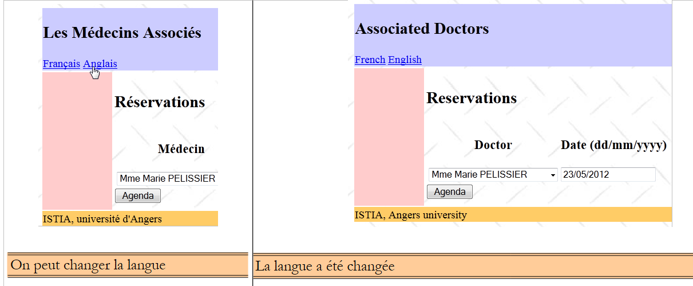 |
Finally, an error page may also appear:
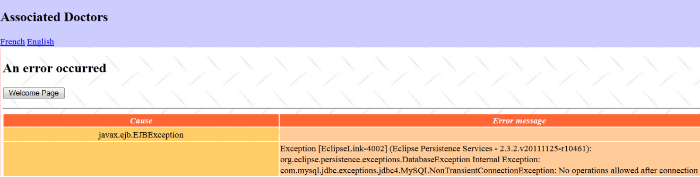 |
3.3. The Database
Let’s return to the architecture of the application to be built:
 |
The database, which we will call [dbrdvmedecins2] , is a MySQL5 database with four tables:
 |
3.3.1. The [MEDECINS] table
It contains information about the doctors managed by the [RdvMedecins] application.
 |  |
- ID: ID number for the doctor—primary key of the table
- VERSION: ID number for the version of the row in the table. This number is incremented by 1 each time a change is made to the row.
- NOM: the doctor's last name
- PRENOM: their first name
- TITRE: their title (Ms., Mrs., Mr.)
3.3.2. The [CLIENTS] table
The clients records for the various doctors are stored in the [CLIENTS] table:
 |  |
- ID: customer ID number—primary key of the table
- VERSION: ID number for the version of the row in the table. This number is incremented by 1 each time a change is made to the row.
- NOM: the customer's last name
- PRENOM: first name
- TITRE: their title (Ms., Mrs., Mr.)
3.3.3. The [CRENEAUX] table
It lists the time slots where RV entries are possible:
 |
 |
- ID: ID number for the time slot—primary key of the table (row 8)
- VERSION: number identifying the version for the row in the table. This number is incremented by 1 each time a change is made to the row.
- ID_MEDECIN: ID number for the doctor to whom this time slot belongs – foreign key on the MEDECINS column (ID).
- HDEBUT: slot start time
- MDEBUT: slot start minutes
- HFIN: slot end hour
- MFIN: slot end minutes
The second row of table [CRENEAUX] (see [1] above) indicates, for example, that slot No. 2 begins at 8:20 a.m. and ends at 8:40 a.m. and belongs to doctor No. 1 (Dr. Marie PELISSIER).
3.3.4. The table [RV]
lists the RVs assigned to each doctor:
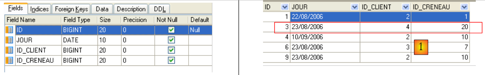 |
- ID: ID number that uniquely identifies the RV – primary key
- JOUR: date of the RV
- ID_CRENEAU: time slot for RV – foreign key on the [ID] field in the [CRENEAUX] table – determines both the time slot and the doctor concerned.
- ID_CLIENT: Customer ID for whom the reservation is made – foreign key on the [ID] field of the [CLIENTS] table
This table has a uniqueness constraint on the values of the joined columns (JOUR, ID_CRENEAU):
If a row in table [RV] has the value (JOUR1, ID_CRENEAU1) for the columns (JOUR, ID_CRENEAU), this value cannot appear anywhere else. Otherwise, this would mean that two RV entries were recorded at the same time for the same doctor. From a Java programming perspective, the database driver JDBC triggers a SQLException when this occurs.
The id line equal to 3 (see [1] above) means that a RV was booked for slot #20 and client #4 on 08/23/2006. The table [CRENEAUX] tells us that slot no. 20 corresponds to the time slot 4:20 PM – 4:40 PM and belongs to doctor no. 1 (Ms. Marie PELISSIER). Table [CLIENTS] tells us that client #4 is Ms. Brigitte BISTROU.
3.3.5. Generating the database
To create the tables and populate them, you can use the script [dbrdvmedecins2.sql], which can be found on the examples website. With [WampServer] (see section 1.3.3), you can proceed as follows:
 |
- In [1], click the [WampServer] icon and select option, [PhpMyAdmin], and [2],
- in [3], in the window that opens, select the link [Bases de données],
 |
- to [2], create a database named [4] with encoding [5],
- in [7], the database has been created. Click on its link,
 |
- in [8], import a file named SQL,
- which you select from the file system using the [9] button,
 |
- in [11], select the script SQL, and in [12], run it,
- in [13], the four database tables have been created. Follow one of the links,
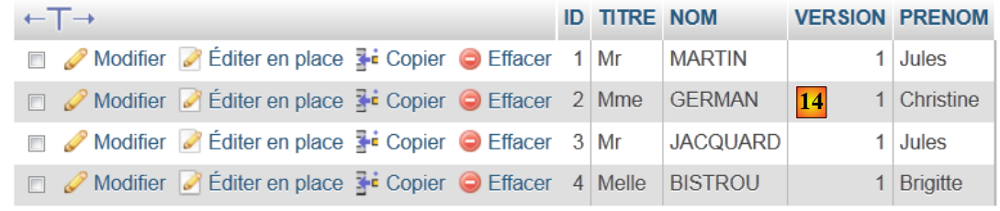 |
- in [14], the table contents.
We will not return to this database again. However, the reader is invited to follow its evolution throughout the programs, especially when things don’t work.
3.4. The layers [DAO] and [JPA]
Let’s return to the architecture we need to build:
 |
We will build four Maven projects:
- one project for the [DAO] and [JPA] layers,
- one project for the [métier] layer,
- a project for the [web] layer,
- an enterprise project that will bring together the three previous projects.
We are now building the Maven project for layers [DAO] and [JPA].
Note: Understanding layers [métier], [DAO], and [JPA] requires knowledge of Java EE. For this, you can refer to [ref7] (see paragraph 3).
3.4.1. The Netbeans project
is as follows:
 |
- In [1], we build a Maven project of type [EJB Module] [2],
- in [3], we name the project,
 |
- in [4], we select the Glassfish server,
- in [5], the generated project.
3.4.2. Generation of layer [JPA]
Let’s return to the architecture we need to build:
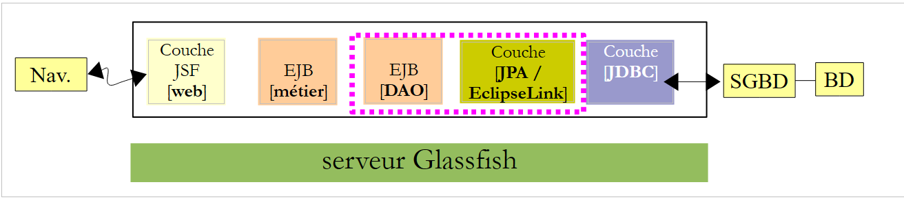 |
With Netbeans, it is possible to automatically generate the [JPA] layer and the [EJB] layer, which controls access to the generated JPA entities. It is useful to be familiar with these automatic generation methods because the generated code provides valuable insights into how to write JPA entities or the EJB code that uses them.
We will now describe some of these automatic generation tools. To understand the generated code, you need a good understanding of the JPA, [ref8], and EJB, [ref7] entities (see paragraph 3).
3.4.2.1. Creating a Netbeans connection to the database
- Run SGBD and MySQL 5 so that BD is available,
- create a Netbeans connection to the [dbrdvmedecins2] database,
 |
- in the [Services] [1] tab, in the [Databases] [2] branch, select the driver JDBC MySQL [3],
- then select the "Connect Using" option in option [4] to create a connection to a database in MySQL,
- in [5], enter the requested information. In [6], enter the database name; in [7], enter the database user and password;
- in [8], you can test the information you provided,
- in [9], the expected message when the information is correct,
 |
- in [10], the connection is established. Here we see the four tables in the connected database.
3.4.2.2. Creating a persistence unit
Let’s return to the architecture currently under construction:
 |
We are currently building the [JPA] layer. Its configuration is defined in a [persistence.xml] file where persistence units are defined. Each of them requires the following information:
- the JDBC database access credentials (URL, username, password),
- the classes that will serve as the database table representations,
- the JPA implementation used. In fact, JPA is a specification implemented by various products. Here, we will use EclipseLink, which is the default implementation used by the Glassfish server. This prevents us from having to add the libraries of another implementation to Glassfish.
Netbeans can generate this persistence file using a wizard.
 |
- Right-click on the project and choose to create a [1] persistence unit,
- in [2], name the persistence unit you are creating,
- in [3], select the implementation JPA EclipseLink (JPA 2.0),
- in [4], specify that database transactions will be managed by the EJB container on the Glassfish server,
- in [5], specify that the tables in BD have already been created and therefore will not be created,
 |
- in [6], create a new data source for the Glassfish server,
- in [7], assign a name JNDI (Java Naming Directory Interface),
- in [8], link this name to the MySQL connection created in the previous step,
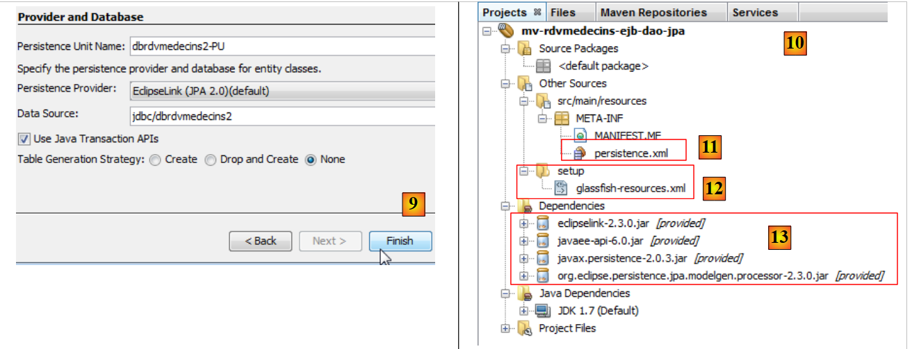 |
- in [9], finish the wizard,
- [10], the new project,
- in [11], the file [persistence.xml] was generated in the folder [META-INF],
- in [12], a folder named [setup] was generated,
- in [13], new dependencies were added to the Maven project.
The generated [META-INF/persistence.xml] file is as follows:
<?xml version="1.0" encoding="UTF-8"?>
<persistence version="2.0" xmlns="http://java.sun.com/xml/ns/persistence" xmlns:xsi="http://www.w3.org/2001/XMLSchema-instance" xsi:schemaLocation="http://java.sun.com/xml/ns/persistence http://java.sun.com/xml/ns/persistence/persistence_2_0.xsd">
<persistence-unit name="dbrdvmedecins2-PU" transaction-type="JTA">
<jta-data-source>jdbc/dbrdvmedecins2</jta-data-source>
<exclude-unlisted-classes>false</exclude-unlisted-classes>
<properties/>
</persistence-unit>
</persistence>
It includes the information provided in the wizard:
- line 3: the name of the persistence unit,
- Line 3: the type of database transactions, in this case JTA transactions (Java Transaction Api) managed by the EJB3 container on the Glassfish server,
- Line 4: the name JNDI of the data source.
Normally, this file contains the JPA implementation type used. In the wizard, we specified EclipseLink. Since this is the JPA implementation used by default by the Glassfish server, it is not mentioned in the [persistence.xml] file.
In the [Design] tab, you can see an overview of the [persistence.xml] file:
 |
To obtain logs for EclipseLink, we will use the following [persistence.xml] file:
<?xml version="1.0" encoding="UTF-8"?>
<persistence version="2.0" xmlns="http://java.sun.com/xml/ns/persistence" xmlns:xsi="http://www.w3.org/2001/XMLSchema-instance" xsi:schemaLocation="http://java.sun.com/xml/ns/persistence http://java.sun.com/xml/ns/persistence/persistence_2_0.xsd">
<persistence-unit name="dbrdvmedecins2-PU" transaction-type="JTA">
<provider>org.eclipse.persistence.jpa.PersistenceProvider</provider>
<jta-data-source>jdbc/dbrdvmedecins2</jta-data-source>
<exclude-unlisted-classes>false</exclude-unlisted-classes>
<properties>
<property name="eclipselink.logging.level" value="FINE"/>
</properties>
</persistence-unit>
</persistence>
- line 4: specifies that the JPA implementation of EclipseLink is being used,
- lines 7–9: contain the configuration properties for the JPA provider, here EclipseLink,
- line 8: this property enables logging of the SQL commands that EclipseLink will issue.
The [glassfish-resources.xml] file that was created is as follows:
<?xml version="1.0" encoding="UTF-8"?>
<!DOCTYPE resources PUBLIC "-//GlassFish.org//DTD GlassFish Application Server 3.1 Resource Definitions//EN" "http://glassfish.org/dtds/glassfish-resources_1_5.dtd">
<resources>
<jdbc-connection-pool allow-non-component-callers="false" ... steady-pool-size="8" validate-atmost-once-period-in-seconds="0" wrap-jdbc-objects="false">
<property name="serverName" value="localhost"/>
<property name="portNumber" value="3306"/>
<property name="databaseName" value="dbrdvmedecins2"/>
<property name="User" value="root"/>
<property name="Password" value=""/>
<property name="URL" value="jdbc:mysql://localhost:3306/dbrdvmedecins2"/>
<property name="driverClass" value="com.mysql.jdbc.Driver"/>
</jdbc-connection-pool>
<jdbc-resource enabled="true" jndi-name="jdbc/dbrdvmedecins2" object-type="user" pool-name="mysql_dbrdvmedecins2_rootPool"/>
</resources>
This file contains the information we entered in the two wizards used previously:
- lines 5–11: the characteristics JDBC of the database MySQL5 [dbrdvmedecins2],
- line 13: the name JNDI of the data source.
This file will be used to create the data source JNDI [jdbc/dbrdvmedecins2] on the server Glassfish. It is entirely specific to this server. For another server, a different approach would be required, typically using an administration tool. Such a tool also exists for Glassfish.
Finally, dependencies have been added to the project. The [pom.xml] file is as follows:
<project xmlns="http://maven.apache.org/POM/4.0.0" xmlns:xsi="http://www.w3.org/2001/XMLSchema-instance"
xsi:schemaLocation="http://maven.apache.org/POM/4.0.0 http://maven.apache.org/xsd/maven-4.0.0.xsd">
<modelVersion>4.0.0</modelVersion>
<groupId>istia.st</groupId>
<artifactId>mv-rdvmedecins-ejb-dao-jpa</artifactId>
<version>1.0-SNAPSHOT</version>
<packaging>ejb</packaging>
<name>mv-rdvmedecins-ejb-dao-jpa</name>
...
<dependencies>
<dependency>
<groupId>org.eclipse.persistence</groupId>
<artifactId>eclipselink</artifactId>
<version>2.3.0</version>
<scope>provided</scope>
</dependency>
<dependency>
<groupId>org.eclipse.persistence</groupId>
<artifactId>javax.persistence</artifactId>
<version>2.0.3</version>
<scope>provided</scope>
</dependency>
<dependency>
<groupId>org.eclipse.persistence</groupId>
<artifactId>org.eclipse.persistence.jpa.modelgen.processor</artifactId>
<version>2.3.0</version>
<scope>provided</scope>
</dependency>
<dependency>
<groupId>javax</groupId>
<artifactId>javaee-api</artifactId>
<version>6.0</version>
<scope>provided</scope>
</dependency>
</dependencies>
...
<repositories>
<repository>
<url>http://download.eclipse.org/rt/eclipselink/maven.repo/</url>
<id>eclipselink</id>
<layout>default</layout>
<name>Repository for library Library[eclipselink]</name>
</repository>
</repositories>
</project>
- lines 32–37, a layer [JPA] requires the artifact [javaee-api],
- lines 16, 22, 28: the artifacts required by the JPA / EclipseLink implementation used here.
- lines 18, 24, 30, 36: all artifacts have the provided attribute. Note that this means they are required for compilation but not for execution. In fact, during execution, they are provided by the Glassfish server,
- lines 41–48: define a new Maven artifact repository, where the EclipseLink artifacts can be found.
3.4.2.3. Generation of JPA entities
JPA entities can be generated by a Netbeans wizard:
 |
- in [1], JPA entities are created from a database,
- In [2], select the previously created data source [jdbc / dbrdvmedecins2],
- in [3], the list of tables for this data source,
- in [4], select all of them,
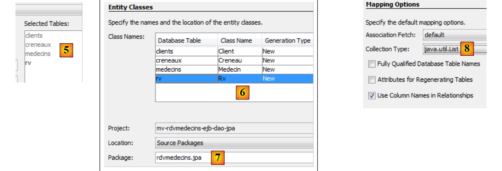 |
- in [5], the selected tables,
- in [6], we name the Java classes associated with the four tables,
- as well as a package name in [7],
- in [8], JPA groups table rows from BD into collections. We choose the list as the collection,
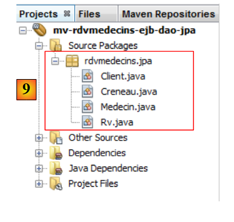 |
- in [9], the Java classes created by the wizard.
3.4.2.4. The generated JPA entities
The [Medecin] entity is the mapping of the [medecins] table. The Java class is littered with annotations that make the code difficult to read at first glance. If we keep only what is essential to understanding the entity’s role, we get the following code:
package rdvmedecins.jpa;
...
@Entity
@Table(name = "medecins")
public class Medecin implements Serializable {
@Id
@GeneratedValue(strategy = GenerationType.IDENTITY)
@Column(name = "ID")
private Long id;
@Column(name = "TITRE")
private String titre;
@Column(name = "NOM")
private String nom;
@Column(name = "VERSION")
private int version;
@Column(name = "PRENOM")
private String prenom;
@OneToMany(cascade = CascadeType.ALL, mappedBy = "idMedecin")
private List<Creneau> creneauList;
// manufacturers
....
// getters and setters
....
@Override
public int hashCode() {
...
}
@Override
public boolean equals(Object object) {
...
}
@Override
public String toString() {
...
}
}
- On line 4, the @Entity annotation designates the [Medecin] class as an entity, along with JPA and c.a.d. a class linked to a table for BD via API and JPA,
- line 5, the name of the table BD associated with the entity JPA. Each field in the table corresponds to a field in the Java class,
- line 6, the class implements the Serializable interface. This is necessary in client/server applications, where entities are serialized between the client and the server.
- lines 10–11: the field id of the class [Medecin] corresponds to the field [ID] (line 10) of the table [medecins],
- lines 13–14: The title field of class [Medecin] corresponds to field [TITRE] (line 13) in table [medecins],
- rows 16-17: the "name" field of class [Medecin] corresponds to the [NOM] field (row 16) in table [medecins],
- rows 19-20: the field version in class [Medecin] corresponds to the field [VERSION] (row 19) in table [medecins]. Here, the wizard does not recognize that the column is actually a column from version that must be incremented each time the row to which it belongs is modified. To assign this role to it, you must add the annotation @Version. We will do this in a later step,
- lines 22–23: the first_name field of the [Medecin] class corresponds to the [PRENOM] field in the [medecins] table,
- lines 10–11: the field id corresponds to the primary key [ID] of the table. The annotations on lines 8–9 clarify this point,
- row 8: the annotation @Id indicates that the annotated field is associated with the table’s primary key,
- line 9: the layer [JPA] will generate the primary key for the rows it will insert into the table [Medecins]. There are several possible strategies. Here, the GenerationType.IDENTITY strategy indicates that the JPA layer will use the auto_increment mode of the MySQL table,
- lines 25–26: the table [creneaux] has a foreign key on the table [medecins]. A time slot belongs to a doctor. Conversely, a doctor has several time slots associated with them. We therefore have a one-to-many relationship (one doctor to many slots), a relationship qualified by the annotation @OneToMany by JPA (line 25). The field on line 26 will contain all of the doctor’s time slots. This is done without programming. To fully understand line 25, we need to introduce the class [Creneau].
It is as follows:
package rdvmedecins.jpa;
import java.io.Serializable;
import java.util.List;
import javax.persistence.*;
import javax.validation.constraints.NotNull;
@Entity
@Table(name = "creneaux")
public class Creneau implements Serializable {
@Id
@GeneratedValue(strategy = GenerationType.IDENTITY)
@Column(name = "ID")
private Long id;
@Column(name = "MDEBUT")
private int mdebut;
@Column(name = "HFIN")
private int hfin;
@Column(name = "HDEBUT")
private int hdebut;
@Column(name = "MFIN")
private int mfin;
@Column(name = "VERSION")
private int version;
@JoinColumn(name = "ID_MEDECIN", referencedColumnName = "ID")
@ManyToOne(optional = false)
private Medecin idMedecin;
@OneToMany(cascade = CascadeType.ALL, mappedBy = "idCreneau")
private List<Rv> rvList;
// manufacturers
...
// getters and setters
...
@Override
public int hashCode() {
...
}
@Override
public boolean equals(Object object) {
...
}
@Override
public String toString() {
...
}
}
We only comment on the new annotations:
- we stated that table [creneaux] has a foreign key to table [medecins]: a time slot is associated with a doctor. Multiple time slots can be associated with the same doctor. There is a relationship from table [creneaux] to table [medecins] that is defined as many-to-one (slots to doctor). The annotation @ManyToOne on line 32 is used to define the foreign key,
- line 31 with the annotation @JoinColumn specifies the foreign key relationship: the column [ID_MEDECIN] in table [creneaux] is a foreign key on the column [ID] in table [medecins],
- row 33: a reference to the doctor who owns the time slot. This is obtained here as well without any programming.
The foreign key relationship between entity [Creneau] and entity [Medecin] is therefore represented by two annotations:
- in the [Creneau] entity:
@JoinColumn(name = "ID_MEDECIN", referencedColumnName = "ID")
@ManyToOne(optional = false)
private Medecin idMedecin;
- in the [Medecin] entity:
@OneToMany(cascade = CascadeType.ALL, mappedBy = "idMedecin")
private List<Creneau> creneauList;
Both annotations represent the same relationship: the foreign key relationship from table [creneaux] to table [medecins]. They are said to be inverses of each other. Only the @ManyToOne relationship is essential. It unambiguously defines the foreign key relationship. The @OneToMany relationship is optional. If present, it simply references the @ManyToOne relationship with which it is associated. This is the meaning of the mappedBy attribute in line 1 of the [Medecin] entity. The value of this attribute is the name of the field in the [Creneau] entity that has the @ManyToOne annotation specifying the foreign key. Still in this same line 1 of the [Medecin] entity, the attribute cascade=CascadeType.ALL determines the behavior of the entity [Medecin] with respect to the entity [Creneau]:
- if a new entity [Medecin] is inserted into the database, then the entities [Creneau] in the field on line 2 must also be inserted,
- if an entity [Medecin] is modified in the database, then the entities [Creneau] in the field on line 2 must also be modified,
- if an entity [Medecin] is deleted from the database, then the entities [Creneau] in the field on line 2 must also be deleted.
We provide the code for the other two entities without specific comments since they do not introduce any new notations.
The entity [Client]
package rdvmedecins.jpa;
...
@Entity
@Table(name = "clients")
public class Client implements Serializable {
@Id
@GeneratedValue(strategy = GenerationType.IDENTITY)
@Column(name = "ID")
private Long id;
@Column(name = "TITRE")
private String titre;
@Column(name = "NOM")
private String nom;
@Column(name = "VERSION")
private int version;
@Column(name = "PRENOM")
private String prenom;
@OneToMany(cascade = CascadeType.ALL, mappedBy = "idClient")
private List<Rv> rvList;
// manufacturers
...
// getters and setters
...
@Override
public int hashCode() {
...
}
@Override
public boolean equals(Object object) {
...
}
@Override
public String toString() {
...
}
}
- Lines 24–25 reflect the foreign key relationship between the [rv] table and the [clients] table.
The [Rv] entity:
package rdvmedecins.jpa;
...
@Entity
@Table(name = "rv")
public class Rv implements Serializable {
@Id
@GeneratedValue(strategy = GenerationType.IDENTITY)
@Column(name = "ID")
private Long id;
@Column(name = "JOUR")
@Temporal(TemporalType.DATE)
private Date jour;
@JoinColumn(name = "ID_CRENEAU", referencedColumnName = "ID")
@ManyToOne(optional = false)
private Creneau idCreneau;
@JoinColumn(name = "ID_CLIENT", referencedColumnName = "ID")
@ManyToOne(optional = false)
private Client idClient;
// manufacturers
...
// getters and setters
...
@Override
public int hashCode() {
...
}
@Override
public boolean equals(Object object) {
...
}
@Override
public String toString() {
...
}
}
- Line 13 defines the "day" field as a Java Date type. It specifies that in table [rv], column [JOUR] (line 12) is of type date (without time),
- lines 16–18: define the foreign key relationship from table [rv] to table [creneaux],
- lines 20–22: define the foreign key relationship from table [rv] to table [clients].
The automatic generation of the JPA entities provides us with a working basis. Sometimes this is sufficient, sometimes it is not. This is the case here:
- You must add the annotation @Version to the various version fields of the entities,
- you must write toString methods that are more explicit than the generated ones,
- The entities [Medecin] and [Client] are analogous. We will have them derive from a class [Personne],
- we will remove the inverse relationships @OneToMany of the @ManyToOne relationships. They are not essential and introduce programming complications,
- and we will remove the @NotNull constraint on the primary keys. When persisting an entity JPA with MySQL, the entity initially has a null primary key. It is only after persistence in the database that the primary key of the persisted element has a value.
With these specifications, the different classes become as follows:
The Person class is used to represent doctors and clients:
package rdvmedecins.jpa;
import java.io.Serializable;
import javax.persistence.*;
import javax.validation.constraints.NotNull;
import javax.validation.constraints.Size;
@MappedSuperclass
public class Personne implements Serializable {
private static final long serialVersionUID = 1L;
@Id
@GeneratedValue(strategy = GenerationType.IDENTITY)
@Column(name = "ID")
private Long id;
@Basic(optional = false)
@Size(min = 1, max = 5)
@Column(name = "TITRE")
private String titre;
@Basic(optional = false)
@NotNull
@Size(min = 1, max = 30)
@Column(name = "NOM")
private String nom;
@Basic(optional = false)
@NotNull
@Column(name = "VERSION")
@Version
private int version;
@Basic(optional = false)
@NotNull
@Size(min = 1, max = 30)
@Column(name = "PRENOM")
private String prenom;
// manufacturers
...
// getters and setters
...
@Override
public String toString() {
return String.format("[%s,%s,%s,%s,%s]", id, version, titre, prenom, nom);
}
}
- Line 8: Note that the [Personne] class is not itself an entity (@Entity). It will be the parent class of entities. The @MappedSuperClass annotation indicates this situation.
The [Client] entity encapsulates the rows of the [clients] table. It derives from the previous [Personne] class:
package rdvmedecins.jpa;
import java.io.Serializable;
import javax.persistence.*;
@Entity
@Table(name = "clients")
public class Client extends Personne implements Serializable {
private static final long serialVersionUID = 1L;
// manufacturers
...
@Override
public int hashCode() {
...
}
@Override
public boolean equals(Object object) {
...
}
@Override
public String toString() {
return String.format("Client[%s,%s,%s,%s]", getId(), getTitre(), getPrenom(), getNom());
}
}
- line 6: the class [Client] is a JPA entity,
- line 7: it is associated with the table [clients],
- line 8: it derives from the [Personne] class.
The [Medecin] entity, which encapsulates the rows of the [medecins] table, follows the same pattern:
package rdvmedecins.jpa;
import java.io.Serializable;
import javax.persistence.*;
@Entity
@Table(name = "medecins")
public class Medecin extends Personne implements Serializable {
private static final long serialVersionUID = 1L;
// manufacturers
...
@Override
public int hashCode() {
...
}
@Override
public boolean equals(Object object) {
...
}
@Override
public String toString() {
return String.format("Médecin[%s,%s,%s,%s]", getId(), getTitre(), getPrenom(), getNom());
}
}
The [Creneau] entity encapsulates the rows of the [creneaux] table:
package rdvmedecins.jpa;
import java.io.Serializable;
import java.util.List;
import javax.persistence.*;
import javax.validation.constraints.NotNull;
@Entity
@Table(name = "creneaux")
public class Creneau implements Serializable {
private static final long serialVersionUID = 1L;
@Id
@GeneratedValue(strategy = GenerationType.IDENTITY)
@Basic(optional = false)
@Column(name = "ID")
private Long id;
@Basic(optional = false)
@NotNull
@Column(name = "MDEBUT")
private int mdebut;
@Basic(optional = false)
@NotNull
@Column(name = "HFIN")
private int hfin;
@Basic(optional = false)
@NotNull
@Column(name = "HDEBUT")
private int hdebut;
@Basic(optional = false)
@NotNull
@Column(name = "MFIN")
private int mfin;
@Basic(optional = false)
@NotNull
@Column(name = "VERSION")
@Version
private int version;
@JoinColumn(name = "ID_MEDECIN", referencedColumnName = "ID")
@ManyToOne(optional = false)
private Medecin medecin;
// manufacturers
...
// getters and setters
...
@Override
public int hashCode() {
...
}
@Override
public boolean equals(Object object) {
// TODO: Warning - this method won't work in the case the id fields are not set
...
}
@Override
public String toString() {
return String.format("Creneau [%s, %s, %s:%s, %s:%s,%s]", id, version, hdebut, mdebut, hfin, mfin, medecin);
}
}
- Lines 45–47 model the "many-to-one" relationship between the [creneaux] table and the [medecins] table in the database: a doctor has multiple time slots, and a time slot belongs to a single doctor.
The entity [Rv] encapsulates the rows of the table [rv]:
package rdvmedecins.jpa;
import java.io.Serializable;
import java.util.Date;
import javax.persistence.*;
import javax.validation.constraints.NotNull;
@Entity
@Table(name = "rv")
public class Rv implements Serializable {
private static final long serialVersionUID = 1L;
@Id
@GeneratedValue(strategy = GenerationType.IDENTITY)
@Basic(optional = false)
@Column(name = "ID")
private Long id;
@Basic(optional = false)
@NotNull
@Column(name = "JOUR")
@Temporal(TemporalType.DATE)
private Date jour;
@JoinColumn(name = "ID_CRENEAU", referencedColumnName = "ID")
@ManyToOne(optional = false)
private Creneau creneau;
@JoinColumn(name = "ID_CLIENT", referencedColumnName = "ID")
@ManyToOne(optional = false)
private Client client;
// manufacturers
...
// getters and setters
...
@Override
public int hashCode() {
...
}
@Override
public boolean equals(Object object) {
...
}
@Override
public String toString() {
return String.format("Rv[%s, %s, %s]", id, creneau, client);
}
}
- Lines 29–31 model the "many-to-one" relationship between the [rv] table and the [clients] table (a customer can appear in multiple Rv records) in the database, and lines 25–27 model the "many-to-one" relationship between the [rv] table and the [creneaux] table (a time slot can appear in multiple Rv).
3.4.3. The exception class
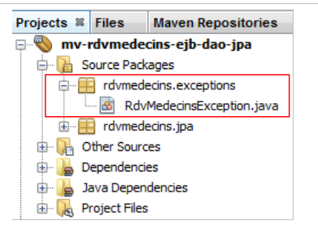 |
The application's exception class [RdvMedecinsException] is as follows:
package rdvmedecins.exceptions;
import java.io.Serializable;
import javax.ejb.ApplicationException;
@ApplicationException(rollback=true)
public class RdvMedecinsException extends RuntimeException implements Serializable{
// private fields
private int code = 0;
// manufacturers
public RdvMedecinsException() {
super();
}
public RdvMedecinsException(String message) {
super(message);
}
public RdvMedecinsException(String message, Throwable cause) {
super(message, cause);
}
public RdvMedecinsException(Throwable cause) {
super(cause);
}
public RdvMedecinsException(String message, int code) {
super(message);
setCode(code);
}
public RdvMedecinsException(Throwable cause, int code) {
super(cause);
setCode(code);
}
public RdvMedecinsException(String message, Throwable cause, int code) {
super(message, cause);
setCode(code);
}
// getters - setters
public int getCode() {
return code;
}
public void setCode(int code) {
this.code = code;
}
}
- Line 7: The class derives from the [RuntimeException] class. The compiler therefore does not require it to be handled with try/catch blocks.
- line 6: the @ApplicationException annotation ensures that the exception will not be "swallowed" by a [EjbException] exception.
To understand the @ApplicationException annotation, let’s revisit the server-side architecture:
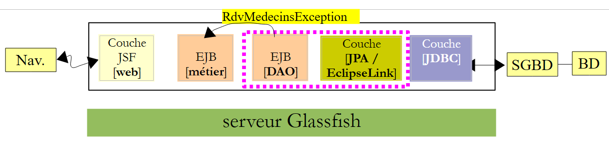 |
The [RdvMedecinsException] exception will be thrown by the EJB methods of the [DAO] layer within the EJB3 container and intercepted by it. Without the @ApplicationException annotation, the EJB3 container encapsulates the exception that occurred within an exception of type [EjbException] and rethrows it. You may not want this encapsulation and may want to allow an exception of type [RdvMedecinsException] to escape from the EJB3 container. This is what the @ApplicationException annotation allows. Furthermore, the (rollback=true) attribute of this annotation instructs the EJB3 container that if an exception of type [RdvMedecinsException] occurs within a method executed as part of a transaction with a SGBD, the transaction must be rolled back. In technical terms, this is called rolling back the transaction.
3.4.4. The EJB of the [DAO] layer
 |
 |
The Java interface [IDao] of the [DAO] layer is as follows:
package rdvmedecins.dao;
import java.util.Date;
import java.util.List;
import rdvmedecins.jpa.Client;
import rdvmedecins.jpa.Creneau;
import rdvmedecins.jpa.Medecin;
import rdvmedecins.jpa.Rv;
public interface IDao {
// clients list
public List<Client> getAllClients();
// list of doctors
public List<Medecin> getAllMedecins();
// list of physician slots
public List<Creneau> getAllCreneaux(Medecin medecin);
// list of a doctor's Rv on a given day
public List<Rv> getRvMedecinJour(Medecin medecin, Date jour);
// find a customer identified by his id
public Client getClientById(Long id);
// find a customer identified by his id
public Medecin getMedecinById(Long id);
// find a Rv identified by its id
public Rv getRvById(Long id);
// find a time slot identified by its id
public Creneau getCreneauById(Long id);
// add a RV to the list
public Rv ajouterRv(Date jour, Creneau creneau, Client client);
// delete a RV
public void supprimerRv(Rv rv);
}
This interface was created after identifying the requirements of the [web] layer:
- line 14: the list of clients. We will need this to populate the dropdown list of clients,
- line 16: the list of doctors. We will need this to populate the drop-down list of doctors,
- line 18: the list of a doctor’s time slots. We’ll need this to display the doctor’s agenda for a given day,
- Line 20: the list of a doctor's appointments for a given day. Combined with the previous method, this will allow us to display the doctor's agenda for a given day, showing their already booked time slots,
- line 22: allows you to find a client by their ID number. This method will allow us to find a client by selecting from the clients dropdown list,
- line 24: same as above for doctors,
- line 26: retrieves an appointment by its number. Can be used when deleting an appointment to verify beforehand that it actually exists,
- line 28: retrieves a time slot based on its ID. Allows you to identify the time slot a user wants to add or delete,
- line 30: to add an appointment,
- line 32: to delete an appointment.
The local interface [IDaoLocal] of EJB simply derives from the previous interface [IDao]:
package rdvmedecins.dao;
import javax.ejb.Local;
@Local
public interface IDaoLocal extends IDao{
}
The same applies to the remote interface [IDaoRemote]:
package rdvmedecins.dao;
import javax.ejb.Remote;
@Remote
public interface IDaoRemote extends IDao{
}
The EJB [DaoJpa] implements both the local and remote interfaces:
package rdvmedecins.dao;
...
@Singleton (mappedName="rdvmedecins.dao")
@TransactionAttribute(TransactionAttributeType.REQUIRED)
public class DaoJpa implements IDaoLocal, IDaoRemote, Serializable {
- Line 5 indicates that the remote EJB is named "rdvmedecins.dao". Furthermore, the @Singleton annotation (Java EE6) ensures that only one instance of the EJB will be created. The @Stateless annotation (Java EE5) defines a EJB that can be created in multiple instances to populate a pool of EJB,
- line 6 indicates that all methods of the EJB take place within a transaction managed by the EJB3 container,
- Line 7 shows that EJB implements the local and remote interfaces and is also serializable.
The complete code for EJB is as follows:
package rdvmedecins.dao;
import java.io.Serializable;
import java.util.Date;
import java.util.List;
import javax.ejb.Singleton;
import javax.ejb.TransactionAttribute;
import javax.ejb.TransactionAttributeType;
import javax.persistence.EntityManager;
import javax.persistence.PersistenceContext;
import rdvmedecins.exceptions.RdvMedecinsException;
import rdvmedecins.jpa.Client;
import rdvmedecins.jpa.Creneau;
import rdvmedecins.jpa.Medecin;
import rdvmedecins.jpa.Rv;
@Singleton (mappedName="rdvmedecins.dao")
@TransactionAttribute(TransactionAttributeType.REQUIRED)
public class DaoJpa implements IDaoLocal, IDaoRemote, Serializable {
@PersistenceContext
private EntityManager em;
// clients list
public List<Client> getAllClients() {
try {
return em.createQuery("select rc from Client rc").getResultList();
} catch (Throwable th) {
throw new RdvMedecinsException(th, 1);
}
}
// list of doctors
public List<Medecin> getAllMedecins() {
try {
return em.createQuery("select rm from Medecin rm").getResultList();
} catch (Throwable th) {
throw new RdvMedecinsException(th, 2);
}
}
// list of time slots for a given doctor
// doctor: the doctor
public List<Creneau> getAllCreneaux(Medecin medecin) {
try {
return em.createQuery("select rc from Creneau rc join rc.medecin m where m.id=:idMedecin").setParameter("idMedecin", medecin.getId()).getResultList();
} catch (Throwable th) {
throw new RdvMedecinsException(th, 3);
}
}
// list of Rv from a given doctor on a given day
// doctor: the doctor
// day: the day
public List<Rv> getRvMedecinJour(Medecin medecin, Date jour) {
try {
return em.createQuery("select rv from Rv rv join rv.creneau c join c.idMedecin m where m.id=:idMedecin and rv.jour=:jour").setParameter("idMedecin", medecin.getId()).setParameter("jour", jour).getResultList();
} catch (Throwable th) {
throw new RdvMedecinsException(th, 3);
}
}
// addition of a Rv
// day : day of Rv
// creneau: time slot from Rv
// customer: customer for whom the Rv is taken
public Rv ajouterRv(Date jour, Creneau creneau, Client client) {
try {
Rv rv = new Rv(null, jour);
rv.setClient(client);
rv.setCreneau(creneau);
em.persist(rv);
return rv;
} catch (Throwable th) {
throw new RdvMedecinsException(th, 4);
}
}
// delete a Rv
// rv: Rv deleted
public void supprimerRv(Rv rv) {
try {
em.remove(em.merge(rv));
} catch (Throwable th) {
throw new RdvMedecinsException(th, 5);
}
}
// retrieve a specific customer
public Client getClientById(Long id) {
try {
return (Client) em.find(Client.class, id);
} catch (Throwable th) {
throw new RdvMedecinsException(th, 6);
}
}
// retrieve a specific doctor
public Medecin getMedecinById(Long id) {
try {
return (Medecin) em.find(Medecin.class, id);
} catch (Throwable th) {
throw new RdvMedecinsException(th, 6);
}
}
// retrieve a given Rv
public Rv getRvById(Long id) {
try {
return (Rv) em.find(Rv.class, id);
} catch (Throwable th) {
throw new RdvMedecinsException(th, 6);
}
}
// retrieve a given slot
public Creneau getCreneauById(Long id) {
try {
return (Creneau) em.find(Creneau.class, id);
} catch (Throwable th) {
throw new RdvMedecinsException(th, 6);
}
}
}
- line 22: the EntityManager object that manages access to the persistence context. When the class is instantiated, this field will be initialized by the EJB container using the @PersistenceContext annotation on line 21,
- line 27: JPQL query (Java Persistence Query Language) that returns all rows of the [clients] table as a list of [Client] objects,
- line 36: similar query for doctors,
- line 46: a JPQL query performing a join between the tables [creneaux] and [medecins]. It is parameterized by the doctor’s id,
- line 57: a query JPQL performing a join between the tables [rv], [creneaux], and [medecins] and having two parameters: the doctor's id and the day of the Rv,
- lines 69–73: creation of a Rv followed by its persistence in the database,
- line 83: deletion of a Rv from the database,
- line 92: performs a SELECT query on the database to find a specific client,
- line 101: same for a doctor,
- line 110: same for a Rv,
- line 119: same for a time slot,
- all operations using the persistence context from line 22 are likely to encounter a problem with the database. Therefore, they are all enclosed in a try/catch block. Any exception is encapsulated in the "custom" exception RdvMedecinsException.
3.4.5. Implementation of the JDBC driver from MySQL
In the architecture below:
 |
EclipseLink requires the JDBC driver from MySQL. This must be installed in the libraries of the Glassfish server in the <glassfish>/domains/domain1/lib/ext, where <glassfish> is the installation folder of the Glassfish server. This can be obtained as follows:
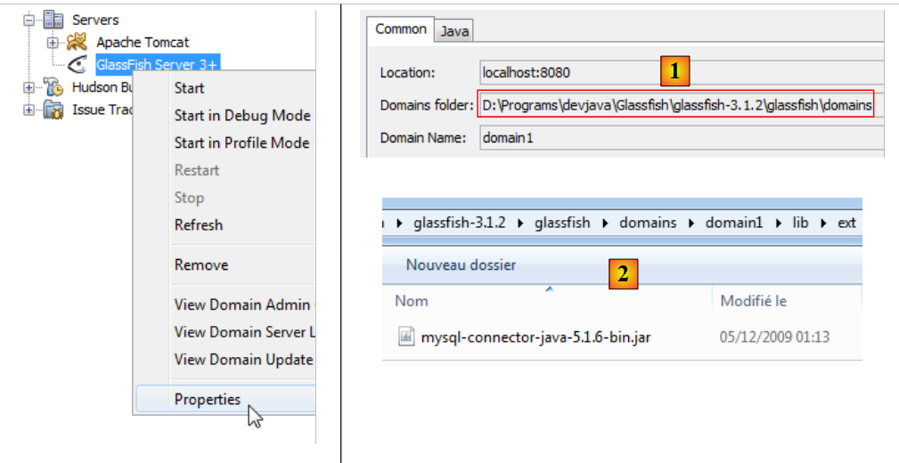 |
The folder where the JDBC driver for MySQL should be placed is <Domains folder>[1]/domain1/lib/ext [2]. This driver is available at URL [http://www.mysql.fr/downloads/connector/j/]. Once installed, you must restart the Glassfish server for it to recognize this new library.
3.4.6. Deployment of the EJB layer
Let’s return to the architecture built so far:
 |
The [web, métier, DAO, JPA] assembly must be deployed to the Glassfish server. We do this:
 |
- In [1], we build the Maven project,
- in [2], we run it,
- in [3], it has been deployed to the Glassfish server ([Services] tab)
You might be curious to look at the logs for Glassfish:
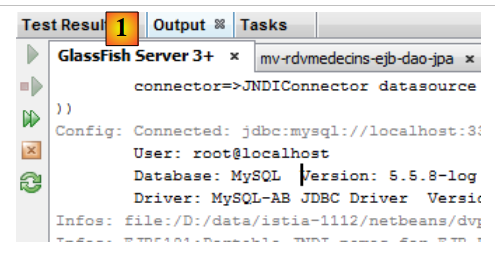 |
In [1], the logs for Glassfish are available in the [Output / Glassfish Server 3+] tab. They are as follows:
The lines identified by [Config] and [Précis] are logs from EclipseLink; those identified by [Infos] come from Glassfish.
- Lines 1–12: EclipseLink processes the JPA entities it has discovered,
- lines 13–17: information indicating that the processing of the JPA entities proceeded normally,
- line 18: EclipseLink reports itself,
- line 19: EclipseLink recognizes that it is dealing with SGBD MySQL,
- lines 20–24: EclipseLink attempts to connect to BD,
- lines 25–28: it succeeded,
- lines 29–33: it attempts to reconnect, this time specifically using a MySQL platform (line 30),
- lines 34–37: successful here as well,
- line 38: confirmation that the [dbrdvmedecins-PU] persistence unit was successfully instantiated,
- line 39: the portable names of the remote and local interfaces of EJB and [DaoJpa], where "portable" means recognized by all Java application servers EE 6,
- line 40: the names of the remote and local interfaces of EJB [DaoJpa], specific to Glassfish. In the upcoming test, we will use the name "rdvmedecins.dao".
Lines 39 and 40 are important. When writing the client for a EJB on Glassfish, it is necessary to know them.
3.4.7. Testing the EJB of the [DAO] layer
Now that the EJB layer of our application’s [DAO] has been deployed, we can test it. We will do this as part of a client/server application:
 |
The client will test the remote interface of the EJB [DAO] deployed on the Glassfish server.
We start by creating a new Maven project :
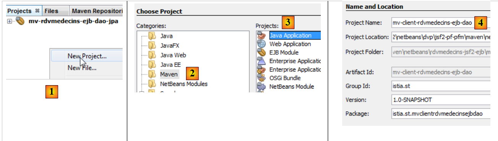 |
- In [1], we create a new project,
- in [2,3], we create a Maven project of type [Java Application],
- in [4], we give it a name and place it in the same folder as EJB and [DAO],
 |
- in [5], the generated project,
- in [6], a class [App.java] was generated. We will delete it,
- in [7], a branch [Source Packages] was generated. We hadn’t encountered it yet. We can put tests JUnit in this branch. We will do so. We will not keep the generated test class [AppTest],
- in [8], the Maven project dependencies. The [Dependencies] branch is empty. We will need to add new dependencies to it. The [Test Dependencies] branch contains the dependencies required for testing. Here, the library used is that of the JUnit 3.8 framework. We will need to change it.
The project evolves as follows:
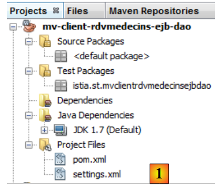 |
- in [1], the project where the two generated classes have been removed, along with the JUnit dependency.
Let’s return to the client/server architecture that will be used for testing:
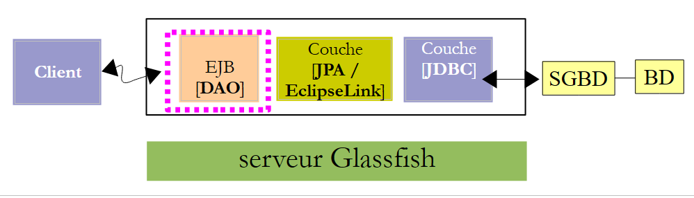 |
The client needs to know the remote interface provided by EJB and [DAO]. Additionally, it will exchange JPA entities with EJB. Therefore, they need the definition of these entities. To ensure that the EJB test project has access to this information, we will add the EJB and [DAO] projects as dependencies to the project:
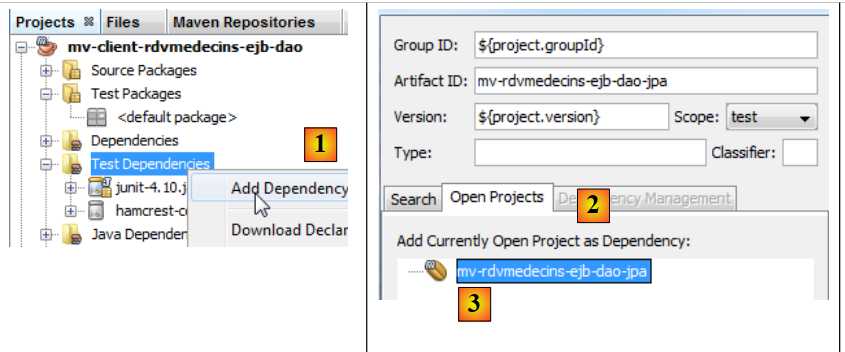 |
- In [1], add a dependency on the [Test Dependencies] branch,
- in [2], select the [Open Projects] tab,
- in [3], select the Maven project for EJB [DAO],
 |
- in [4], the added dependency.
Let’s return to the client/server architecture of the test:
 |
At runtime, the client and server communicate over the TCP-IP network. We will not be programming these exchanges. For each application server, there is a library to be included in the client’s dependencies. The one for Glassfish is called [gf-client]. We add it:
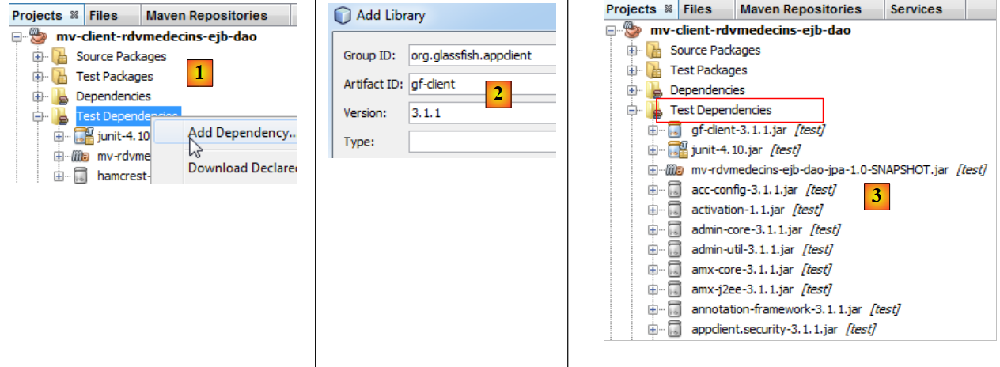 |
- In [1], we add a dependency,
- in [2], we specify the characteristics of the desired artifact,
- in [3], a large number of dependencies are added. Maven will download them. This may take several minutes. They are then stored in the local Maven repository.
We can now create the test JUnit:
 |
- In [2], right-click on [Test Packages] to create a new test JUnit,
 |
- in [3], give the test class a name and a package for it ([4]),
- in [5], select the JUnit 4.x framework,
- in [6], the generated test class,
- in [7], the new dependencies for the Maven project.
The [pom.xml] file is then as follows:
<project xmlns="http://maven.apache.org/POM/4.0.0" xmlns:xsi="http://www.w3.org/2001/XMLSchema-instance"
xsi:schemaLocation="http://maven.apache.org/POM/4.0.0 http://maven.apache.org/xsd/maven-4.0.0.xsd">
<modelVersion>4.0.0</modelVersion>
<groupId>istia.st</groupId>
<artifactId>mv-client-rdvmedecins-ejb-dao</artifactId>
<version>1.0-SNAPSHOT</version>
<packaging>jar</packaging>
<name>mv-client-rdvmedecins-ejb-dao</name>
<url>http://maven.apache.org</url>
<repositories>
<repository>
<url>http://download.eclipse.org/rt/eclipselink/maven.repo/</url>
<id>eclipselink</id>
<layout>default</layout>
<name>Repository for library Library[eclipselink]</name>
</repository>
<repository>
<url>http://repo1.maven.org/maven2/</url>
<id>junit_4</id>
<layout>default</layout>
<name>Repository for library Library[junit_4]</name>
</repository>
</repositories>
<properties>
<project.build.sourceEncoding>UTF-8</project.build.sourceEncoding>
</properties>
<dependencies>
<dependency>
<groupId>junit</groupId>
<artifactId>junit</artifactId>
<version>4.10</version>
<scope>test</scope>
</dependency>
<dependency>
<groupId>${project.groupId}</groupId>
<artifactId>mv-rdvmedecins-ejb-dao-jpa</artifactId>
<version>${project.version}</version>
<scope>test</scope>
</dependency>
<dependency>
<groupId>org.glassfish.appclient</groupId>
<artifactId>gf-client</artifactId>
<version>3.1.1</version>
<scope>test</scope>
</dependency>
</dependencies>
</project>
Note:
- lines 32–51, the project dependencies,
- lines 13–26, two Maven repositories have been defined, one for EclipseLink (lines 14–19), the other for JUnit4 (lines 20–25).
The test class will be as follows:
package rdvmedecins.tests.dao;
import java.util.Date;
import java.util.List;
import javax.naming.InitialContext;
import javax.naming.NamingException;
import junit.framework.Assert;
import org.junit.BeforeClass;
import org.junit.Test;
import rdvmedecins.dao.IDaoRemote;
import rdvmedecins.jpa.Client;
import rdvmedecins.jpa.Creneau;
import rdvmedecins.jpa.Medecin;
import rdvmedecins.jpa.Rv;
public class JUnitTestDao {
// layer [dao] tested
private static IDaoRemote dao;
// today's date
Date jour = new Date();
@BeforeClass
public static void init() throws NamingException {
// environment initialization JNDI
InitialContext initialContext = new InitialContext();
// instantiation layer dao
dao = (IDaoRemote) initialContext.lookup("rdvmedecins.dao");
}
@Test
public void test1() {
// display clients
List<Client> clients =dao.getAllClients();
display("Liste des clients :", clients);
// physician display
List<Medecin> medecins =dao.getAllMedecins();
display("Liste des médecins :", medecins);
// display doctor's slots
Medecin medecin = medecins.get(0);
List<Creneau> creneaux = dao.getAllCreneaux(medecin);
display(String.format("Liste des créneaux du médecin %s", medecin), creneaux);
// list of a doctor's Rv on a given day
display(String.format("Liste des créneaux du médecin %s, le [%s]", medecin, jour), dao.getRvMedecinJour(medecin, jour));
// add a RV to the list
Rv rv = null;
Creneau creneau = creneaux.get(2);
Client client = clients.get(0);
System.out.println(String.format("Ajout d'un Rv le [%s] dans le créneau %s pour le client %s", jour, creneau, client));
rv = dao.ajouterRv(jour, creneau, client);
System.out.println("Rv ajouté");
display(String.format("Liste des Rv du médecin %s, le [%s]", medecin, jour), dao.getRvMedecinJour(medecin, jour));
// add a RV in the same slot on the same day
// must trigger an exception
System.out.println(String.format("Ajout d'un Rv le [%s] dans le créneau %s pour le client %s", jour, creneau, client));
Boolean erreur = false;
try {
rv = dao.ajouterRv(jour, creneau, client);
System.out.println("Rv ajouté");
} catch (Exception ex) {
Throwable th = ex;
while (th != null) {
System.out.println(ex.getMessage());
th = th.getCause();
}
// we note the error
erreur=true;
}
// check for errors
Assert.assertTrue(erreur);
// RV list
display(String.format("Liste des Rv du médecin %s, le [%s]", medecin, jour), dao.getRvMedecinJour(medecin, jour));
// delete a RV
System.out.println("Suppression du Rv ajouté");
dao.supprimerRv(rv);
System.out.println("Rv supprimé");
display(String.format("Liste des Rv du médecin %s, le [%s]", medecin, jour), dao.getRvMedecinJour(medecin, jour));
}
// utility method - displays items in a collection
private static void display(String message, List elements) {
System.out.println(message);
for (Object element : elements) {
System.out.println(element);
}
}
}
- lines 23–29: the method tagged @BeforeClass is executed before all others. Here, we create a reference to the remote interface of EJB [DaoJpa]. Recall that we named it "rdvmedecins.dao",
- lines 34–35: display the list of clients,
- lines 37-38: display the list of doctors,
- lines 40–42: display the time slots for the first doctor,
- line 44: displays the appointments for the first doctor on the day specified in line 21,
- lines 46-51: add an appointment for the first doctor, for time slot #2 and the day in line 21,
- line 52: displays, for verification, the appointments for the first doctor on the day specified in line 21. There must be at least one—the one just added,
- lines 55-70: add the same appointment. Since table [RV] has a uniqueness constraint, this addition must trigger an exception. We verify this on line 70,
- line 72: display the first doctor’s appointments for the day in line 21 for verification. The one we wanted to add should not be there,
- lines 74-76: we delete the single appointment that was added,
- line 77: displays the appointments for the first doctor on the day of line 21 for verification. The one we just deleted should not be there.
This test is a dummy test JUnit. It contains only one assertion (line 70). It is a visual test with the associated flaws.
If everything goes well, the tests should pass:
 |
- in [1], build the test project,
- in [2], the test is run,
- in [3], the test passed.
Let’s take a closer look at the test results:
Readers are encouraged to read these logs alongside the code that generated them. We will focus on the exception that occurred when adding an already existing appointment, lines 41–49. The exception stack is shown in lines 42–48. It is unexpected. Let’s return to the code for the method that adds an appointment:
// addition of a Rv
// day : day of Rv
// creneau: time slot from Rv
// customer: customer for whom the Rv is taken
public Rv ajouterRv(Date jour, Creneau creneau, Client client) {
try {
Rv rv = new Rv(null, jour);
rv.setClient(client);
rv.setCreneau(creneau);
System.out.println(String.format("avant persist : %s",rv));
em.persist(rv);
System.out.println(String.format("après persist : %s",rv));
return rv;
} catch (Throwable th) {
throw new RdvMedecinsException(th, 4);
}
}
Let's look at the logs for Glassfish when adding the two appointments:
- Line 2: before the first persist,
- line 3: after the first persist,
- line 4: the INSERT job that is about to be executed. Note that it does not occur at the same time as the persist operation. If it did, this log would have appeared before line 2. The INSERT operation then normally takes place at the end of the transaction in which the method is executed,
- line 6: EclipseLink asks MySQL for the last primary key used. It will obtain the primary key of the added appointment. This value will populate the id field of the persisted [Rv] entity,
- lines 7-8: the query SELECT, which will display the doctor’s appointments,
- lines 9-10: the screen displays for the second persist,
- lines 11–12: the INSERT command that will be executed. It must throw an exception. This appears on lines 15–16 and is clear. It is initially thrown by the JDBC driver of MySQL for violating the uniqueness constraint of appointments. We can infer that we should see these exceptions in the logs of the JUnit test. However, this is not the case:
Let’s review the client/server architecture of the test:
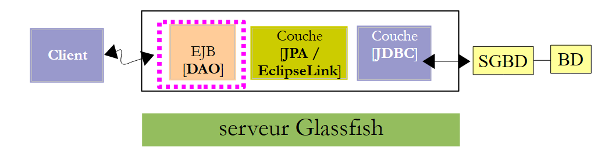 |
When EJB throws an exception, it must be serialized to reach the client. It is likely that this operation failed for a reason I did not understand. Since our full application will not run in a client/server configuration, we can ignore this issue.
Now that the EJB in the [DAO] layer is operational, we can move on to the EJB in the [métier] layer.
3.5. The [métier] layer
Let’s return to the architecture of the application currently under development:
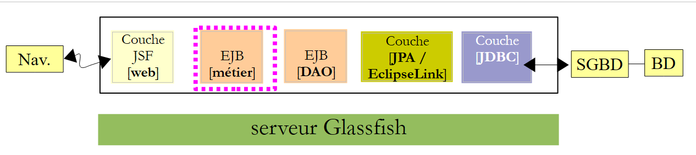 |
We are going to build a new Maven project for the EJB and [métier] layers. As shown above, it will depend on the Maven project that was built for the [DAO] and [JPA] layers.
3.5.1. The Netbeans project
We are building a new Maven project of type EJB. To do this, simply follow the procedure already used and described on page 174.
 |
- In [1], the Maven project for the [métier] layer,
- in [2], we add a dependency,
- in [3], select the Maven project for layers [DAO] and [JPA],
- in [4], we select the scope [provided]. Note that this means it is required for compilation but not for running the project. In fact, the EJB from the [métier] layer will be deployed to the Glassfish server along with theEJB from the [DAO] and [JPA] layers. So when it runs, the EJB layer, consisting of the [DAO] and [JPA] layers, will already be present,
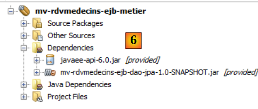 |
- in [6], the new project with its dependency.
Let’s now look at the source code for layer [métier]:
 |
EJB [Metier] will have the following [IMetier] interface:
package rdvmedecins.metier.service;
import java.util.Date;
import java.util.List;
import rdvmedecins.jpa.Client;
import rdvmedecins.jpa.Creneau;
import rdvmedecins.jpa.Medecin;
import rdvmedecins.jpa.Rv;
import rdvmedecins.metier.entites.AgendaMedecinJour;
public interface IMetier {
// layer dao
// clients list
public List<Client> getAllClients();
// list of doctors
public List<Medecin> getAllMedecins();
// list of physician slots
public List<Creneau> getAllCreneaux(Medecin medecin);
// list of a doctor's Rv on a given day
public List<Rv> getRvMedecinJour(Medecin medecin, Date jour);
// find a customer identified by his id
public Client getClientById(Long id);
// find a customer identified by his id
public Medecin getMedecinById(Long id);
// find a Rv identified by its id
public Rv getRvById(Long id);
// find a time slot identified by its id
public Creneau getCreneauById(Long id);
// add a RV to the list
public Rv ajouterRv(Date jour, Creneau creneau, Client client);
// delete a RV
public void supprimerRv(Rv rv);
// job
public AgendaMedecinJour getAgendaMedecinJour(Medecin medecin, Date jour);
}
To understand this interface, we must recall the project architecture:
 |
We defined the interface of the [DAO] layer (section 3.4.4) and specified that it fulfills the requirements of the [web] layer, which are user requirements. The [web] layer communicates with the [DAO] layer only via the [métier] layer. This explains why the [métier] layer contains all the methods of the [DAO] layer. These methods will simply delegate the request from the [web] layer to the [DAO] layer. Nothing more.
During the analysis of the application, a requirement emerged: the ability to display a doctor’s agenda for a given day on a web page in order to see which time slots are booked and which are available. This is typically the case when a secretary responds to a request over the phone. The caller asks for an appointment on a specific day with a specific doctor. To meet this need, the [métier] layer provides the method on line 46.
// job
public AgendaMedecinJour getAgendaMedecinJour(Medecin medecin, Date jour);
One might wonder where to place this method:
- it could be placed in the [DAO] layer. However, this method does not really address a data access need but rather a business need;
- we could place it in the [web] layer. That would be a bad idea. Because if we change the [web] layer to a [Swing] layer, we will lose the method even though the need still exists.
The method takes the doctor and the day for which we want the agenda of appointments as parameters. It returns a [AgendaMedecinJour] object that represents the agenda for the doctor and the day:
package rdvmedecins.metier.entites;
import java.io.Serializable;
import java.text.SimpleDateFormat;
import java.util.Date;
import rdvmedecins.jpa.Medecin;
public class AgendaMedecinJour implements Serializable {
private static final long serialVersionUID = 1L;
// fields
private Medecin medecin;
private Date jour;
private CreneauMedecinJour[] creneauxMedecinJour;
// manufacturers
public AgendaMedecinJour() {
}
public AgendaMedecinJour(Medecin medecin, Date jour, CreneauMedecinJour[] creneauxMedecinJour) {
this.medecin = medecin;
this.jour = jour;
this.creneauxMedecinJour = creneauxMedecinJour;
}
public String toString() {
StringBuffer str = new StringBuffer("");
for (CreneauMedecinJour cr : creneauxMedecinJour) {
str.append(" ");
str.append(cr.toString());
}
return String.format("Agenda[%s,%s,%s]", medecin, new SimpleDateFormat("dd/MM/yyyy").format(jour), str.toString());
}
// getters and setters
...
}
- line 12: the doctor whose ID is agenda,
- line 13: the day of the agenda,
- line 14: the doctor's time slots for that day.
- The class has constructors (lines 17, 21) as well as a custom toString method (line 27).
The [CreneauMedecinJour] class (line 14) is as follows:
package rdvmedecins.metier.entites;
import java.io.Serializable;
import rdvmedecins.jpa.Creneau;
import rdvmedecins.jpa.Rv;
public class CreneauMedecinJour implements Serializable {
private static final long serialVersionUID = 1L;
// fields
private Creneau creneau;
private Rv rv;
// manufacturers
public CreneauMedecinJour() {
}
public CreneauMedecinJour(Creneau creneau, Rv rv) {
this.creneau=creneau;
this.rv=rv;
}
// toString
@Override
public String toString() {
return String.format("[%s %s]", creneau,rv);
}
// getters and setters
...
}
- line 12: a doctor's time slot,
- line 13: the associated appointment, null if the slot is available.
We can see that the creneauxMedecinJour field on line 14 of the [AgendaMedecinJour] class allows us to retrieve all of the doctor’s time slots with the “busy” or “available” status for each one. That was the purpose of the new method [getAgendaMedecinJour] in the [IMetier] interface.
Our EJB [Metier] will have a local interface and a remote interface that will simply extend the main interface [IMetier]:
package rdvmedecins.metier.service;
import javax.ejb.Local;
@Local
public interface IMetierLocal extends IMetier{
}
package rdvmedecins.metier.service;
import javax.ejb.Remote;
@Remote
public interface IMetierRemote extends IMetier{
}
The EJB [Metier] implements these interfaces as follows:
package rdvmedecins.metier.service;
import java.io.Serializable;
import java.util.Date;
import java.util.Hashtable;
import java.util.List;
import java.util.Map;
import javax.ejb.EJB;
import javax.ejb.Singleton;
import javax.ejb.TransactionAttribute;
import javax.ejb.TransactionAttributeType;
import rdvmedecins.dao.IDaoLocal;
import rdvmedecins.jpa.Client;
import rdvmedecins.jpa.Creneau;
import rdvmedecins.jpa.Medecin;
import rdvmedecins.jpa.Rv;
import rdvmedecins.metier.entites.AgendaMedecinJour;
import rdvmedecins.metier.entites.CreneauMedecinJour;
@Singleton
@TransactionAttribute(TransactionAttributeType.REQUIRED)
public class Metier implements IMetierLocal, IMetierRemote, Serializable {
// layer dao
@EJB
private IDaoLocal dao;
public Metier() {
}
@Override
public List<Client> getAllClients() {
return dao.getAllClients();
}
@Override
public List<Medecin> getAllMedecins() {
return dao.getAllMedecins();
}
@Override
public List<Creneau> getAllCreneaux(Medecin medecin) {
return dao.getAllCreneaux(medecin);
}
@Override
public List<Rv> getRvMedecinJour(Medecin medecin, Date jour) {
return dao.getRvMedecinJour(medecin, jour);
}
@Override
public Client getClientById(Long id) {
return dao.getClientById(id);
}
@Override
public Medecin getMedecinById(Long id) {
return dao.getMedecinById(id);
}
@Override
public Rv getRvById(Long id) {
return dao.getRvById(id);
}
@Override
public Creneau getCreneauById(Long id) {
return dao.getCreneauById(id);
}
@Override
public Rv ajouterRv(Date jour, Creneau creneau, Client client) {
return dao.ajouterRv(jour, creneau, client);
}
@Override
public void supprimerRv(Rv rv) {
dao.supprimerRv(rv);
}
@Override
public AgendaMedecinJour getAgendaMedecinJour(Medecin medecin, Date jour) {
// list of doctor's time slots
List<Creneau> creneauxHoraires = dao.getAllCreneaux(medecin);
// list of bookings for the same doctor on the same day
List<Rv> reservations = dao.getRvMedecinJour(medecin, jour);
// create a dictionary from the Rv taken
Map<Long, Rv> hReservations = new Hashtable<Long, Rv>();
for (Rv resa : reservations) {
hReservations.put(resa.getCreneau().getId(), resa);
}
// create the agenda for the requested day
AgendaMedecinJour agenda = new AgendaMedecinJour();
// the doctor
agenda.setMedecin(medecin);
// the day
agenda.setJour(jour);
// reservation slots
CreneauMedecinJour[] creneauxMedecinJour = new CreneauMedecinJour[creneauxHoraires.size()];
agenda.setCreneauxMedecinJour(creneauxMedecinJour);
// filling reservation slots
for (int i = 0; i < creneauxHoraires.size(); i++) {
// line i agenda
creneauxMedecinJour[i] = new CreneauMedecinJour();
// id of the slot
creneauxMedecinJour[i].setCreneau(creneauxHoraires.get(i));
// is the slot free or reserved?
if (hReservations.containsKey(creneauxHoraires.get(i).getId())) {
// the slot is occupied - we note the resa
Rv resa = hReservations.get(creneauxHoraires.get(i).getId());
creneauxMedecinJour[i].setRv(resa);
}
}
// we return the result
return agenda;
}
}
- line 22, the [Metier] class is a singleton EJB,
- line 23, each method of EJB runs within a transaction. This means that the transaction starts at the beginning of the method, in the [métier] layer. This layer will call methods from the [DAO] layer. These will run within the same transaction,
- line 24: EJB implements its local and remote interfaces and is also serializable,
- line 27: a reference to EJB from the [DAO] layer,
- line 29: this will be injected by the EJB container of the Glassfish server, thanks to the @EJB annotation. Therefore, when the methods of the [Metier] class are executed, the reference to EJB in the [DAO] layer has been initialized,
- lines 33–81: this reference is used to delegate the call made to the [métier] layer to the [DAO] layer,
- line 84: the getAgendaMedecinJour method, which retrieves a doctor’s agenda for a given day. We leave it to the reader to follow the comments.
3.5.2. Deployment of the [métier] layer
The [métier] layer depends on the [DAO] layer. Each layer has been implemented with a EJB. To test the EJB and [métier], we need to deploy both EJB layers. To do this, we need an enterprise project.
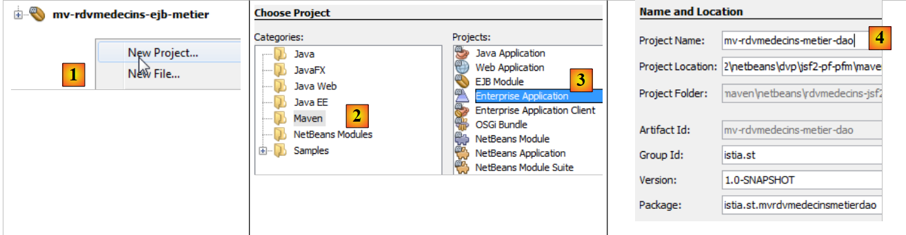 |
- [1], we create a new project,
- of type Maven [2] and Enterprise Application [3],
- and give it a name [4]. The suffix "ear" will be automatically added,
 |
- in [5], select the server Glassfish and Java EE 6,
- in [6], an enterprise application contains modules, typically EJB modules and web modules. Here, the enterprise application will contain the modules from the two EJB projects we built. Since these modules already exist, we do not check the boxes,
- In [7,8], two projects have been created. [8] is the enterprise project we will use. [7] is a project whose purpose I am unaware of. I haven’t had to use it, and since I haven’t delved deeply into Maven, I don’t know what it’s for. So we’ll ignore it.
Now that the enterprise project has been created, we can define its modules.
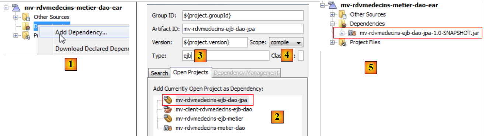 |
- In [1], we create a new dependency,
- in [2], we select the project EJB [DAO],
- in [3], we declare that it is a EJB. Do not leave the type blank, because in that case the jar type will be used, and this type is not suitable here,
- in [4], the scope [compile] is used,
- in [5], the project with its new dependency,
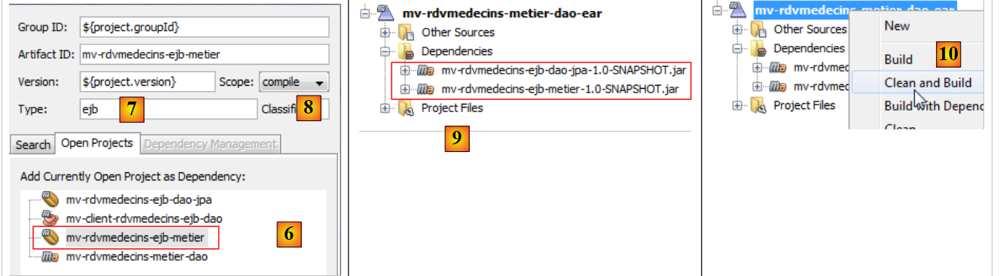 |
- in [6, 7, 8], we start over to add EJB from layer [métier],
- to [9], both dependencies,
- in [10], we build the project,
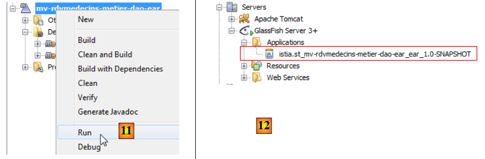 |
- in [11], we run it,
- in [12], in the [Services] tab, we see that the project has been deployed to the Glassfish server. This means that both EJBs are now present on the server.
In the logs of the Glassfish server, you can find information about the deployment of the two EJB:
 |
- in [1], the logs tab for Glassfish.
The following logs are found there:
- Lines 1-5: The JPA entities were recognized,
- line 7: indicates that the construction of the [dbrdvmedecins2-PU] persistence unit was successful and that the connection to the associated database was established,
- line 8: the portable names of the remote and local interfaces for EJB and [DaoJpa]. "Portable" means recognized by all application servers,
- line 9: the same thing but with proprietary names for Glassfish,
- Lines 10–11: same for EJB and [Metier].
We will retain the portable name of the remote interface for EJB and [Metier]:
java:global/istia.st_mv-rdvmedecins-metier-dao-ear_ear_1.0-SNAPSHOT/mv-rdvmedecins-ejb-metier-1.0-SNAPSHOT/Metier!rdvmedecins.metier.service.IMetierRemote
We will need this during testing of the [métier] layer.
3.5.3. Testing the [métier] layer
As we did for the [DAO] layer, we will test the [métier] layer as part of a client/server application:
 |
The client will test the remote interface of the EJB [Metier] deployed on the Glassfish server.
We begin by creating a new Maven project. To do this, we follow the procedure used to create the test project for the [dao] layer (see section 3.4.7), excluding the creation of the JUnit test. The project created in this way is as follows
 |
- in [1], the project created with its dependencies: on EJB from the [dao] layer, on EJB from the [métier] layer, and the [gf-client] library.
At this point, the [pom.xml] file in the project is as follows:
<project xmlns="http://maven.apache.org/POM/4.0.0" xmlns:xsi="http://www.w3.org/2001/XMLSchema-instance"
xsi:schemaLocation="http://maven.apache.org/POM/4.0.0 http://maven.apache.org/xsd/maven-4.0.0.xsd">
<modelVersion>4.0.0</modelVersion>
<groupId>istia.st</groupId>
<artifactId>mv-client-rdvmedecins-ejb-metier</artifactId>
<version>1.0-SNAPSHOT</version>
<packaging>jar</packaging>
<name>mv-client-rdvmedecins-ejb-metier</name>
<url>http://maven.apache.org</url>
<properties>
<project.build.sourceEncoding>UTF-8</project.build.sourceEncoding>
</properties>
<dependencies>
<dependency>
<groupId>org.glassfish.appclient</groupId>
<artifactId>gf-client</artifactId>
<version>3.1.1</version>
</dependency>
<dependency>
<groupId>${project.groupId}</groupId>
<artifactId>mv-rdvmedecins-ejb-dao-jpa</artifactId>
<version>${project.version}</version>
</dependency>
<dependency>
<groupId>${project.groupId}</groupId>
<artifactId>mv-rdvmedecins-ejb-metier</artifactId>
<version>${project.version}</version>
</dependency>
</dependencies>
</project>
Make sure you have the dependencies described in lines 17–33. The test will be a simple console class:
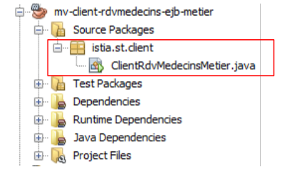 |
The code for the [ClientRdvMedecinsMetier] class is as follows:
package istia.st.client;
import java.util.Date;
import java.util.List;
import javax.naming.InitialContext;
import rdvmedecins.jpa.Client;
import rdvmedecins.jpa.Creneau;
import rdvmedecins.jpa.Medecin;
import rdvmedecins.jpa.Rv;
import rdvmedecins.metier.entites.AgendaMedecinJour;
import rdvmedecins.metier.service.IMetierRemote;
public class ClientRdvMedecinsMetier {
// the remote interface name of the EJB [Metier]
private static String IDaoRemoteName = "java:global/istia.st_mv-rdvmedecins-metier-dao-ear_ear_1.0-SNAPSHOT/mv-rdvmedecins-ejb-metier-1.0-SNAPSHOT/Metier!rdvmedecins.metier.service.IMetierRemote";
// today's date
private static Date jour = new Date();
public static void main(String[] args) {
try {
// context JNDI of server Glassfish
InitialContext initialContext = new InitialContext();
// reference on remote [metier] layer
IMetierRemote metier = (IMetierRemote) initialContext.lookup(IDaoRemoteName);
// display clients
List<Client> clients = metier.getAllClients();
display("Liste des clients :", clients);
// physician display
List<Medecin> medecins = metier.getAllMedecins();
display("Liste des médecins :", medecins);
// display doctor's slots
Medecin medecin = medecins.get(0);
List<Creneau> creneaux = metier.getAllCreneaux(medecin);
display(String.format("Liste des créneaux du médecin %s", medecin), creneaux);
// list of a doctor's Rv on a given day
display(String.format("Liste des rendez-vous du médecin %s, le [%s]", medecin, jour), metier.getRvMedecinJour(medecin, jour));
// display agenda
AgendaMedecinJour agenda = metier.getAgendaMedecinJour(medecin, jour);
System.out.println(agenda);
// add a RV
Rv rv = null;
Creneau creneau = creneaux.get(2);
Client client = clients.get(0);
System.out.println(String.format("Ajout d'un Rv le [%s] dans le créneau %s pour le client %s", jour, creneau, client));
rv = metier.ajouterRv(jour, creneau, client);
System.out.println("Rv ajouté");
display(String.format("Liste des Rv du médecin %s, le [%s]", medecin, jour), metier.getRvMedecinJour(medecin, jour));
// display agenda
agenda = metier.getAgendaMedecinJour(medecin, jour);
System.out.println(agenda);
// delete a RV
System.out.println("Suppression du Rv ajouté");
metier.supprimerRv(rv);
System.out.println("Rv supprimé");
display(String.format("Liste des Rv du médecin %s, le [%s]", medecin, jour), metier.getRvMedecinJour(medecin, jour));
// display agenda
agenda = metier.getAgendaMedecinJour(medecin, jour);
System.out.println(agenda);
} catch (Throwable ex) {
System.out.println("Erreur...");
while (ex != null) {
System.out.println(String.format("%s : %s", ex.getClass().getName(), ex.getMessage()));
ex = ex.getCause();
}
}
}
// utility method - displays items in a collection
private static void display(String message, List elements) {
System.out.println(message);
for (Object element : elements) {
System.out.println(element);
}
}
}
- line 18: the portable name of the remote interface of the EJB [Metier] was taken from the logs of Glassfish,
- lines 24–27: a reference is obtained to the remote interface of the EJB [Metier],
- lines 29-30: display clients,
- lines 32-33: display the doctors,
- lines 35-37: display a doctor's available time slots,
- line 39: displays a doctor’s appointments on a given day,
- lines 41-42: the agenda for that same doctor on the same day,
- lines 44-49: add an appointment,
- line 50: displays the doctor's appointments. There should be one more,
- lines 52–53: Display the doctor’s agenda. The added appointment should be visible,
- lines 55–57: the appointment just added is deleted,
- line 58: this should be reflected in the doctor's appointment list,
- lines 60-61: and in their agenda.
We run the test:
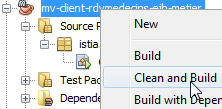 |  |
The resulting screen displays are as follows:
Liste des clients :
Client[1,Mr,Jules,MARTIN]
Client[2,Mme,Christine,GERMAN]
Client[3,Mr,Jules,JACQUARD]
Client[4,Melle,Brigitte,BISTROU]
Liste des médecins :
Médecin[1,Mme,Marie,PELISSIER]
Médecin[2,Mr,Jacques,BROMARD]
Médecin[3,Mr,Philippe,JANDOT]
Médecin[4,Melle,Justine,JACQUEMOT]
Liste des créneaux du médecin Médecin[1,Mme,Marie,PELISSIER]
Creneau [1, 1, 8:0, 8:20,Médecin[1,Mme,Marie,PELISSIER]]
Creneau [2, 1, 8:20, 8:40,Médecin[1,Mme,Marie,PELISSIER]]
Creneau [3, 1, 8:40, 9:0,Médecin[1,Mme,Marie,PELISSIER]]
Creneau [4, 1, 9:0, 9:20,Médecin[1,Mme,Marie,PELISSIER]]
Creneau [5, 1, 9:20, 9:40,Médecin[1,Mme,Marie,PELISSIER]]
Creneau [6, 1, 9:40, 10:0,Médecin[1,Mme,Marie,PELISSIER]]
Creneau [7, 1, 10:0, 10:20,Médecin[1,Mme,Marie,PELISSIER]]
Creneau [8, 1, 10:20, 10:40,Médecin[1,Mme,Marie,PELISSIER]]
Creneau [9, 1, 10:40, 11:0,Médecin[1,Mme,Marie,PELISSIER]]
Creneau [10, 1, 11:0, 11:20,Médecin[1,Mme,Marie,PELISSIER]]
Creneau [11, 1, 11:20, 11:40,Médecin[1,Mme,Marie,PELISSIER]]
Creneau [12, 1, 11:40, 12:0,Médecin[1,Mme,Marie,PELISSIER]]
Creneau [13, 1, 14:0, 14:20,Médecin[1,Mme,Marie,PELISSIER]]
Creneau [14, 1, 14:20, 14:40,Médecin[1,Mme,Marie,PELISSIER]]
Creneau [15, 1, 14:40, 15:0,Médecin[1,Mme,Marie,PELISSIER]]
Creneau [16, 1, 15:0, 15:20,Médecin[1,Mme,Marie,PELISSIER]]
Creneau [17, 1, 15:20, 15:40,Médecin[1,Mme,Marie,PELISSIER]]
Creneau [18, 1, 15:40, 16:0,Médecin[1,Mme,Marie,PELISSIER]]
Creneau [19, 1, 16:0, 16:20,Médecin[1,Mme,Marie,PELISSIER]]
Creneau [20, 1, 16:20, 16:40,Médecin[1,Mme,Marie,PELISSIER]]
Creneau [21, 1, 16:40, 17:0,Médecin[1,Mme,Marie,PELISSIER]]
Creneau [22, 1, 17:0, 17:20,Médecin[1,Mme,Marie,PELISSIER]]
Creneau [23, 1, 17:20, 17:40,Médecin[1,Mme,Marie,PELISSIER]]
Creneau [24, 1, 17:40, 18:0,Médecin[1,Mme,Marie,PELISSIER]]
Liste des créneaux du médecin Médecin[1,Mme,Marie,PELISSIER], le [Wed May 23 16:25:26 CEST 2012]
Agenda[Médecin[1,Mme,Marie,PELISSIER],23/05/2012, [Creneau [1, 1, 8:0, 8:20,Médecin[1,Mme,Marie,PELISSIER]] null] [Creneau [2, 1, 8:20, 8:40,Médecin[1,Mme,Marie,PELISSIER]] null] [Creneau [3, 1, 8:40, 9:0,Médecin[1,Mme,Marie,PELISSIER]] null] [Creneau [4, 1, 9:0, 9:20,Médecin[1,Mme,Marie,PELISSIER]] null] [Creneau [5, 1, 9:20, 9:40,Médecin[1,Mme,Marie,PELISSIER]] null] [Creneau [6, 1, 9:40, 10:0,Médecin[1,Mme,Marie,PELISSIER]] null] [Creneau [7, 1, 10:0, 10:20,Médecin[1,Mme,Marie,PELISSIER]] null] [Creneau [8, 1, 10:20, 10:40,Médecin[1,Mme,Marie,PELISSIER]] null] [Creneau [9, 1, 10:40, 11:0,Médecin[1,Mme,Marie,PELISSIER]] null] [Creneau [10, 1, 11:0, 11:20,Médecin[1,Mme,Marie,PELISSIER]] null] [Creneau [11, 1, 11:20, 11:40,Médecin[1,Mme,Marie,PELISSIER]] null] [Creneau [12, 1, 11:40, 12:0,Médecin[1,Mme,Marie,PELISSIER]] null] [Creneau [13, 1, 14:0, 14:20,Médecin[1,Mme,Marie,PELISSIER]] null] [Creneau [14, 1, 14:20, 14:40,Médecin[1,Mme,Marie,PELISSIER]] null] [Creneau [15, 1, 14:40, 15:0,Médecin[1,Mme,Marie,PELISSIER]] null] [Creneau [16, 1, 15:0, 15:20,Médecin[1,Mme,Marie,PELISSIER]] null] [Creneau [17, 1, 15:20, 15:40,Médecin[1,Mme,Marie,PELISSIER]] null] [Creneau [18, 1, 15:40, 16:0,Médecin[1,Mme,Marie,PELISSIER]] null] [Creneau [19, 1, 16:0, 16:20,Médecin[1,Mme,Marie,PELISSIER]] null] [Creneau [20, 1, 16:20, 16:40,Médecin[1,Mme,Marie,PELISSIER]] null] [Creneau [21, 1, 16:40, 17:0,Médecin[1,Mme,Marie,PELISSIER]] null] [Creneau [22, 1, 17:0, 17:20,Médecin[1,Mme,Marie,PELISSIER]] null] [Creneau [23, 1, 17:20, 17:40,Médecin[1,Mme,Marie,PELISSIER]] null] [Creneau [24, 1, 17:40, 18:0,Médecin[1,Mme,Marie,PELISSIER]] null]]
Ajout d'a Rv on [Wed May 23 16:25:26 CEST 2012] in the slot Creneau [3, 1, 8:40, 9:0,Doctor[1,Mrs,Marie,PELISSIER]] for the customer Client[1,Mr,Jules,MARTIN]
Rv ajouté
Liste des Rv du médecin Médecin[1,Mme,Marie,PELISSIER], le [Wed May 23 16:25:26 CEST 2012]
Rv[252, Creneau [3, 1, 8:40, 9:0,Médecin[1,Mme,Marie,PELISSIER]], Client[1,Mr,Jules,MARTIN]]
Agenda[Médecin[1,Mme,Marie,PELISSIER],23/05/2012, [Creneau [1, 1, 8:0, 8:20,Médecin[1,Mme,Marie,PELISSIER]] null] [Creneau [2, 1, 8:20, 8:40,Médecin[1,Mme,Marie,PELISSIER]] null] [Creneau [3, 1, 8:40, 9:0,Médecin[1,Mme,Marie,PELISSIER]] Rv[252, Creneau [3, 1, 8:40, 9:0,Médecin[1,Mme,Marie,PELISSIER]], Client[1,Mr,Jules,MARTIN]]] [Creneau [4, 1, 9:0, 9:20,Médecin[1,Mme,Marie,PELISSIER]] null] [Creneau [5, 1, 9:20, 9:40,Médecin[1,Mme,Marie,PELISSIER]] null] [Creneau [6, 1, 9:40, 10:0,Médecin[1,Mme,Marie,PELISSIER]] null] [Creneau [7, 1, 10:0, 10:20,Médecin[1,Mme,Marie,PELISSIER]] null] [Creneau [8, 1, 10:20, 10:40,Médecin[1,Mme,Marie,PELISSIER]] null] [Creneau [9, 1, 10:40, 11:0,Médecin[1,Mme,Marie,PELISSIER]] null] [Creneau [10, 1, 11:0, 11:20,Médecin[1,Mme,Marie,PELISSIER]] null] [Creneau [11, 1, 11:20, 11:40,Médecin[1,Mme,Marie,PELISSIER]] null] [Creneau [12, 1, 11:40, 12:0,Médecin[1,Mme,Marie,PELISSIER]] null] [Creneau [13, 1, 14:0, 14:20,Médecin[1,Mme,Marie,PELISSIER]] null] [Creneau [14, 1, 14:20, 14:40,Médecin[1,Mme,Marie,PELISSIER]] null] [Creneau [15, 1, 14:40, 15:0,Médecin[1,Mme,Marie,PELISSIER]] null] [Creneau [16, 1, 15:0, 15:20,Médecin[1,Mme,Marie,PELISSIER]] null] [Creneau [17, 1, 15:20, 15:40,Médecin[1,Mme,Marie,PELISSIER]] null] [Creneau [18, 1, 15:40, 16:0,Médecin[1,Mme,Marie,PELISSIER]] null] [Creneau [19, 1, 16:0, 16:20,Médecin[1,Mme,Marie,PELISSIER]] null] [Creneau [20, 1, 16:20, 16:40,Médecin[1,Mme,Marie,PELISSIER]] null] [Creneau [21, 1, 16:40, 17:0,Médecin[1,Mme,Marie,PELISSIER]] null] [Creneau [22, 1, 17:0, 17:20,Médecin[1,Mme,Marie,PELISSIER]] null] [Creneau [23, 1, 17:20, 17:40,Médecin[1,Mme,Marie,PELISSIER]] null] [Creneau [24, 1, 17:40, 18:0,Médecin[1,Mme,Marie,PELISSIER]] null]]
Suppression du Rv ajouté
Rv supprimé
Liste des Rv du médecin Médecin[1,Mme,Marie,PELISSIER], le [Wed May 23 16:25:26 CEST 2012]
Agenda[Médecin[1,Mme,Marie,PELISSIER],23/05/2012, [Creneau [1, 1, 8:0, 8:20,Médecin[1,Mme,Marie,PELISSIER]] null] [Creneau [2, 1, 8:20, 8:40,Médecin[1,Mme,Marie,PELISSIER]] null] [Creneau [3, 1, 8:40, 9:0,Médecin[1,Mme,Marie,PELISSIER]] null] [Creneau [4, 1, 9:0, 9:20,Médecin[1,Mme,Marie,PELISSIER]] null] [Creneau [5, 1, 9:20, 9:40,Médecin[1,Mme,Marie,PELISSIER]] null] [Creneau [6, 1, 9:40, 10:0,Médecin[1,Mme,Marie,PELISSIER]] null] [Creneau [7, 1, 10:0, 10:20,Médecin[1,Mme,Marie,PELISSIER]] null] [Creneau [8, 1, 10:20, 10:40,Médecin[1,Mme,Marie,PELISSIER]] null] [Creneau [9, 1, 10:40, 11:0,Médecin[1,Mme,Marie,PELISSIER]] null] [Creneau [10, 1, 11:0, 11:20,Médecin[1,Mme,Marie,PELISSIER]] null] [Creneau [11, 1, 11:20, 11:40,Médecin[1,Mme,Marie,PELISSIER]] null] [Creneau [12, 1, 11:40, 12:0,Médecin[1,Mme,Marie,PELISSIER]] null] [Creneau [13, 1, 14:0, 14:20,Médecin[1,Mme,Marie,PELISSIER]] null] [Creneau [14, 1, 14:20, 14:40,Médecin[1,Mme,Marie,PELISSIER]] null] [Creneau [15, 1, 14:40, 15:0,Médecin[1,Mme,Marie,PELISSIER]] null] [Creneau [16, 1, 15:0, 15:20,Médecin[1,Mme,Marie,PELISSIER]] null] [Creneau [17, 1, 15:20, 15:40,Médecin[1,Mme,Marie,PELISSIER]] null] [Creneau [18, 1, 15:40, 16:0,Médecin[1,Mme,Marie,PELISSIER]] null] [Creneau [19, 1, 16:0, 16:20,Médecin[1,Mme,Marie,PELISSIER]] null] [Creneau [20, 1, 16:20, 16:40,Médecin[1,Mme,Marie,PELISSIER]] null] [Creneau [21, 1, 16:40, 17:0,Médecin[1,Mme,Marie,PELISSIER]] null] [Creneau [22, 1, 17:0, 17:20,Médecin[1,Mme,Marie,PELISSIER]] null] [Creneau [23, 1, 17:20, 17:40,Médecin[1,Mme,Marie,PELISSIER]] null] [Creneau [24, 1, 17:40, 18:0,Médecin[1,Mme,Marie,PELISSIER]] null]]
- Line 37: Ms. agenda’s appointment, May 23, 2012. No time slot has been reserved,
- line 39: addition of an appointment,
- line 42: Ms. PELISSIER’s new agenda. A slot is now reserved for Mr. MARTIN,
- line 44: the appointment has been deleted,
- line 46: Ms. PELISSIER's agenda shows that no slot is reserved.
We now consider layers [DAO] and [métier] to be operational. We still need to write layer [web] using the JSF framework. To do this, we will use the knowledge acquired at the beginning of this document.
3.6. The [web] layer
Let’s return to the architecture currently under construction:
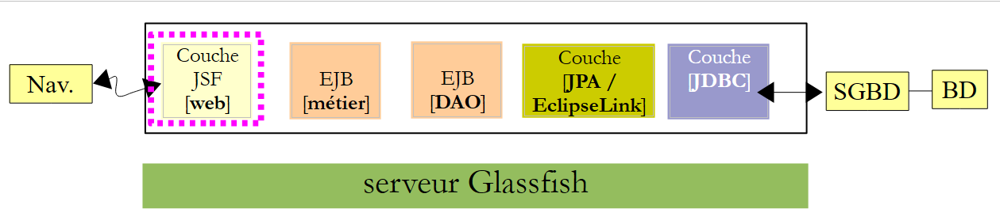 |
We are going to build the final layer, the [web] layer.
3.6.1. The Netbeans project
We are building a Maven project:
 |
- In [1], we create a new project,
- in [2, 3], a Maven project of type [Web Application],
- in [4], we give it a name,
 |
- in [5], we select the Glassfish server and Java EE 6 Web,
- in [6], the project thus created,
- in [7], the project after removing the page [index.jsp] and the package in [Source Packages],
 |
- in [8, 9], in the project properties, add a framework,
- in [10], select Java Server Faces,
 |
- in [11], configure Java Server Faces. Leave the default values. Note that JSF 2 is used,
- in [12], the project is then modified in two ways: a file named [web.xml] is generated, as well as a page named [index.html].
The [web.xml] file is as follows:
<?xml version="1.0" encoding="UTF-8"?>
<web-app version="3.0" xmlns="http://java.sun.com/xml/ns/javaee" xmlns:xsi="http://www.w3.org/2001/XMLSchema-instance" xsi:schemaLocation="http://java.sun.com/xml/ns/javaee http://java.sun.com/xml/ns/javaee/web-app_3_0.xsd">
<context-param>
<param-name>javax.faces.PROJECT_STAGE</param-name>
<param-value>Development</param-value>
</context-param>
<servlet>
<servlet-name>Faces Servlet</servlet-name>
<servlet-class>javax.faces.webapp.FacesServlet</servlet-class>
<load-on-startup>1</load-on-startup>
</servlet>
<servlet-mapping>
<servlet-name>Faces Servlet</servlet-name>
<url-pattern>/faces/*</url-pattern>
</servlet-mapping>
<session-config>
<session-timeout>
30
</session-timeout>
</session-config>
<welcome-file-list>
<welcome-file>faces/index.xhtml</welcome-file>
</welcome-file-list>
</web-app>
We have already encountered this file.
- Lines 7–11: define the servlet that will handle all requests made to the application. This is the JSF servlet,
- lines 12–15: define the URLs handled by this servlet. These are the URLs of the form /faces/*,
- lines 21–23: define the [index.xhtml] page as the home page.
This page is as follows:
<?xml version='1.0' encoding='UTF-8' ?>
<!DOCTYPE html PUBLIC "-//W3C//DTD XHTML 1.0 Transitional//EN" "http://www.w3.org/TR/xhtml1/DTD/xhtml1-transitional.dtd">
<html xmlns="http://www.w3.org/1999/xhtml"
xmlns:h="http://java.sun.com/jsf/html">
<h:head>
<title>Facelet Title</title>
</h:head>
<h:body>
Hello from Facelets
</h:body>
</html>
We've seen this before. We can run this project:
 |
- in [1], we run the project and get the result [2] in the browser.
We will now present the complete project and then go into detail about its various components.
 |
- in [1], the XHTML pages of the project,
- in [2], the Java code,
- in [3], the message files, since the application is internationalized,
 |
- in [4], the project dependencies.
3.6.2. Project dependencies
Let’s return to the project architecture:
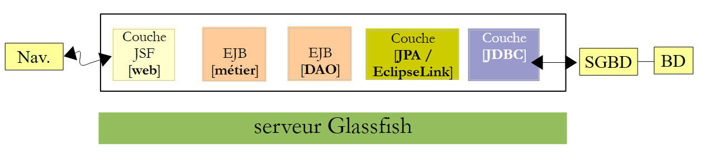 |
The JSF layer relies on the [métier], [DAO], and [JPA] layers. These three layers are encapsulated in the two Maven projects we built, which explains the dependencies of the [4] project. Let’s simply show how these dependencies are added:
 |
- in [1], we’ll use `ejb` to indicate that the dependency is on the EJB project,
- in [2], we’ll specify [provided]. This is because the web project will be deployed alongside the two EJB projects. Therefore, it does not need to include the JARs from EJB.
3.6.3. Project configuration
The project configuration is the same as that of the JSF projects we examined at the beginning of this document. We list the configuration files without re-explaining them.
 |  |
[web.xml]: configures the web application.
<?xml version="1.0" encoding="UTF-8"?>
<web-app version="3.0" xmlns="http://java.sun.com/xml/ns/javaee" xmlns:xsi="http://www.w3.org/2001/XMLSchema-instance" xsi:schemaLocation="http://java.sun.com/xml/ns/javaee http://java.sun.com/xml/ns/javaee/web-app_3_0.xsd">
<context-param>
<param-name>javax.faces.PROJECT_STAGE</param-name>
<param-value>Production</param-value>
</context-param>
<context-param>
<param-name>javax.faces.FACELETS_SKIP_COMMENTS</param-name>
<param-value>true</param-value>
</context-param>
<servlet>
<servlet-name>Faces Servlet</servlet-name>
<servlet-class>javax.faces.webapp.FacesServlet</servlet-class>
<load-on-startup>1</load-on-startup>
</servlet>
<servlet-mapping>
<servlet-name>Faces Servlet</servlet-name>
<url-pattern>/faces/*</url-pattern>
</servlet-mapping>
<session-config>
<session-timeout>
30
</session-timeout>
</session-config>
<welcome-file-list>
<welcome-file>faces/index.xhtml</welcome-file>
</welcome-file-list>
<error-page>
<error-code>500</error-code>
<location>/faces/exception.xhtml</location>
</error-page>
<error-page>
<exception-type>Exception</exception-type>
<location>/faces/exception.xhtml</location>
</error-page>
</web-app>
Note that on line 26, the page [index.xhtml] is the application's home page.
[faces-config.xml]: configures the JSF application
<?xml version='1.0' encoding='UTF-8'?>
<!-- =========== FULL CONFIGURATION FILE ================================== -->
<faces-config version="2.0"
xmlns="http://java.sun.com/xml/ns/javaee"
xmlns:xsi="http://www.w3.org/2001/XMLSchema-instance"
xsi:schemaLocation="http://java.sun.com/xml/ns/javaee http://java.sun.com/xml/ns/javaee/web-facesconfig_2_0.xsd">
<application>
<resource-bundle>
<base-name>
messages
</base-name>
<var>msg</var>
</resource-bundle>
<message-bundle>messages</message-bundle>
</application>
</faces-config>
[beans.xml]: empty but required for the @Named annotation
<?xml version="1.0" encoding="UTF-8"?>
<beans xmlns="http://java.sun.com/xml/ns/javaee"
xmlns:xsi="http://www.w3.org/2001/XMLSchema-instance"
xsi:schemaLocation="http://java.sun.com/xml/ns/javaee http://java.sun.com/xml/ns/javaee/beans_1_0.xsd">
</beans>
[styles.css]: the application's style sheet
.reservationsHeaders {
text-align: center;
font-style: italic;
color: Snow;
background: Teal;
}
.creneau {
height: 25px;
text-align: center;
background: MediumTurquoise;
}
.client {
text-align: left;
background: PowderBlue;
}
.action {
width: 6em;
text-align: left;
color: Black;
background: MediumTurquoise;
}
.erreursHeaders {
background: Teal;
background-color: #ff6633;
color: Snow;
font-style: italic;
text-align: center
}
.erreurClasse {
background: MediumTurquoise;
background-color: #ffcc66;
height: 25px;
text-align: center
}
.erreurMessage {
background: PowderBlue;
background-color: #ffcc99;
text-align: left
}
[messages_fr.properties]: the French message file
# layout
layout.entete=Les M\u00e9decins Associ\u00e9s
layout.basdepage=ISTIA, universit\u00e9 d'Angers
layout.entete.langue1=Fran\u00e7ais
layout.entete.langue2=Anglais
# exception
exception.header=L'the following exception occurred
exception.httpCode=Code HTTP de l'error
exception.message=Message de l'exception
exception.requestUri=Url demand\u00e9e lors de l'error
exception.servletName=Nom de la servlet demand\u00e9e lorsque l'error occurred
# form 1
form1.titre=R\u00e9servations
form1.medecin=M\u00e9decin
form1.jour=Jour (jj/mm/aaaa)
form1.button.agenda=Agenda
form1.jour.required=date requise
form1.jour.erreur=date erron\u00e9e
# form 2
form2.titre=Agenda de {0} {1} {2} le {3}
form2.titre_detail=Agenda de {0} {1} {2} le {3}
form2.creneauHoraire=Cr\u00e9neau horaire
form2.client=Client
form2.accueil=Accueil
form2.supprimer=Supprimer
form2.reserver=R\u00e9server
# form 3
form3.titre=Prise de rendez-vous de {0} {1} {2}, le {3} dans le cr\u00e9neau {4,number,#00}:{5,number,#00} - {6,number,#00}:{7,number,#00}
form3.titre_detail=Prise de rendez-vous de {0} {1} {2}, le {3} dans le cr\u00e9neau {4,number,#00}:{5,number,#00} - {6,number,#00}:{7,number,#00}
form3.client=Client
form3.valider=Valider
form3.annuler=Annuler
# error
erreur.titre=Une erreur s'is produced.
erreur.message=Message d'error
erreur.accueil=Page d'home
erreur.classe=Cause
[messages_en.properties]: English message file
# layout
layout.entete=Associated Doctors
layout.basdepage=ISTIA, Angers university
layout.entete.langue1=French
layout.entete.langue2=English
# exception
exception.header=The following exceptions occurred
exception.httpCode=Error HTTP code
exception.message=Exception message
exception.requestUri=Url targeted when error occurred
exception.servletName=Servlet targeted's name when error occurred
# form 1
form1.titre=Reservations
form1.medecin=Doctor
form1.jour=Date (dd/mm/yyyy)
form1.button.agenda=Diary
form1.jour.required=The date is required
form1.jour.erreur=The date is invalid
# form 2
form2.titre={0} {1} {2}'diary on {3}
form2.titre_detail={0} {1} {2}'diary on {3}
form2.creneauHoraire=Time Period
form2.client=Client
form2.accueil=Welcome Page
form2.supprimer=Delete
form2.reserver=Reserve
# form 3
form3.titre=Reservation for {0} {1} {2}, on {3} in the time period {4,number,#00}:{5,number,#00} - {6,number,#00}:{7,number,#00}
form3.titre_detail=Reservation for {0} {1} {2}, on {3} in the time period {4,number,#00}:{5,number,#00} - {6,number,#00}:{7,number,#00}
form3.client=Client
form3.valider=Submit
form3.annuler=Cancel
# error
erreur.titre=An error occurred
erreur.message=Error message
erreur.accueil=Welcome Page
erreur.classe=Cause
3.6.4. Project Views
Let’s review how the application works. The home page is as follows:
 |
From this initial page, the user (Secretary, Doctor) will perform a number of actions. We present them below. The left-hand view shows the page from which the user submits a request; the right-hand view shows the response sent by the server.
 |
 |
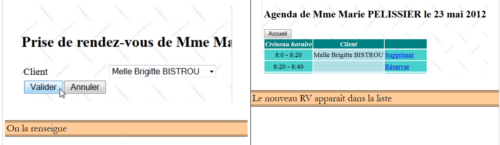 |
 |
 |
 |
Finally, an error page may also be displayed:
 |
These different views are generated by the following pages of the web project:
 |
- in [1], the pages [basdepage, entete, layout] handle the formatting of all views,
- in [2], the view generated by [layout.xhtml].
Facelets technology was used here. This was described in Section 2.11. We will simply provide the code for the XHTML pages used for layout:
[entete.xhtml]
<?xml version='1.0' encoding='UTF-8' ?>
<!DOCTYPE html PUBLIC "-//W3C//DTD XHTML 1.0 Transitional//EN" "http://www.w3.org/TR/xhtml1/DTD/xhtml1-transitional.dtd">
<html xmlns="http://www.w3.org/1999/xhtml"
xmlns:h="http://java.sun.com/jsf/html"
xmlns:f="http://java.sun.com/jsf/core"
xmlns:ui="http://java.sun.com/jsf/facelets">
<body>
<h2><h:outputText value="#{msg['layout.entete']}"/></h2>
<div align="left">
<h:commandLink value="#{msg['layout.entete.langue1']}" actionListener="#{changeLocale.setFrenchLocale}"/>
<h:outputText value=" "/>
<h:commandLink value="#{msg['layout.entete.langue2']}" actionListener="#{changeLocale.setEnglishLocale}"/>
</div>
</body>
</html>
Note lines 10–12, the two links for changing the application language.
[basdepage.xhtml]
<?xml version='1.0' encoding='UTF-8' ?>
<!DOCTYPE html PUBLIC "-//W3C//DTD XHTML 1.0 Transitional//EN" "http://www.w3.org/TR/xhtml1/DTD/xhtml1-transitional.dtd">
<html xmlns="http://www.w3.org/1999/xhtml"
xmlns:h="http://java.sun.com/jsf/html">
<body>
<h:outputText value="#{msg['layout.basdepage']}"/>
</body>
</html>
[layout.xhtml]
<?xml version='1.0' encoding='UTF-8' ?>
<!DOCTYPE html PUBLIC "-//W3C//DTD XHTML 1.0 Transitional//EN" "http://www.w3.org/TR/xhtml1/DTD/xhtml1-transitional.dtd">
<html xmlns="http://www.w3.org/1999/xhtml"
xmlns:h="http://java.sun.com/jsf/html"
xmlns:f="http://java.sun.com/jsf/core"
xmlns:ui="http://java.sun.com/jsf/facelets">
<f:view locale="#{changeLocale.locale}">
<h:head>
<title>RdvMedecins</title>
<h:outputStylesheet library="css" name="styles.css"/>
</h:head>
<h:body style="background-image: url('${request.contextPath}/resources/images/standard.jpg');">
<h:form id="formulaire">
<table style="width: 1200px">
<tr>
<td colspan="2" bgcolor="#ccccff">
<ui:include src="entete.xhtml"/>
</td>
</tr>
<tr>
<td style="width: 100px; height: 200px" bgcolor="#ffcccc">
</td>
<td>
<ui:insert name="contenu" >
<h2>Contenu</h2>
</ui:insert>
</td>
</tr>
<tr bgcolor="#ffcc66">
<td colspan="2">
<ui:include src="basdepage.xhtml"/>
</td>
</tr>
</table>
</h:form>
</h:body>
</f:view>
</html>
This page is the template for page [index.xhtml]:
<?xml version='1.0' encoding='UTF-8' ?>
<!DOCTYPE html PUBLIC "-//W3C//DTD XHTML 1.0 Transitional//EN" "http://www.w3.org/TR/xhtml1/DTD/xhtml1-transitional.dtd">
<html xmlns="http://www.w3.org/1999/xhtml"
xmlns:h="http://java.sun.com/jsf/html"
xmlns:f="http://java.sun.com/jsf/core"
xmlns:ui="http://java.sun.com/jsf/facelets">
<ui:composition template="layout.xhtml">
<ui:define name="contenu">
<h:panelGroup rendered="#{form.form1Rendered}">
<ui:include src="form1.xhtml"/>
</h:panelGroup>
<h:panelGroup rendered="#{form.form2Rendered}">
<ui:include src="form2.xhtml"/>
</h:panelGroup>
<h:panelGroup rendered="#{form.form3Rendered}">
<ui:include src="form3.xhtml"/>
</h:panelGroup>
<h:panelGroup rendered="#{form.erreurRendered}">
<ui:include src="erreur.xhtml"/>
</h:panelGroup>
</ui:define>
</ui:composition>
</html>
Lines 8–21 define the area called "content" (line 8) in [layout.xhtml] (line 7). This is the central area of the views:
 |
The page [index.xhtml] is the only page in the application. Therefore, there will be no navigation between pages. It displays one of the four [form1.xhtml, form2.xhtml, form3.xhtml, erreur.xhtml] pages. This display is controlled by four [form1Rendered, form2Rendered, form3Rendered, erreurRendered] booleans from the form bean, which we will describe shortly.
3.6.5. The project’s beans
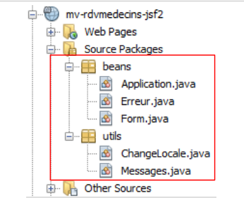 |
The classes in the [utils] package have already been presented:
- The [ChangeLocale] class handles language switching. It has already been discussed (Section 2.4.4).
- The [Messages] class facilitates the internationalization of an application’s messages. It was discussed in section 2.8.5.7.
3.6.5.1. The Application Bean
The [Application] bean is as follows:
package beans;
import java.util.ArrayList;
import java.util.HashMap;
import java.util.List;
import java.util.Map;
import javax.annotation.PostConstruct;
import javax.ejb.EJB;
import javax.enterprise.context.ApplicationScoped;
import javax.inject.Named;
import rdvmedecins.jpa.Client;
import rdvmedecins.jpa.Medecin;
import rdvmedecins.metier.service.IMetierLocal;
@Named(value = "application")
@ApplicationScoped
public class Application implements Serializable{
// business layer
@EJB
private IMetierLocal metier;
// cache
private List<Medecin> medecins;
private List<Client> clients;
private Map<Long, Medecin> hMedecins = new HashMap<Long, Medecin>();
private Map<Long, Client> hClients = new HashMap<Long, Client>();
// errors
private List<Erreur> erreurs = new ArrayList<Erreur>();
private Boolean erreur = false;
public Application() {
}
@PostConstruct
public void init() {
// doctors and clients are cached
try {
medecins = metier.getAllMedecins();
clients = metier.getAllClients();
} catch (Throwable th) {
// we note the error
erreur = true;
erreurs.add(new Erreur(th.getClass().getName(), th.getMessage()));
while (th.getCause() != null) {
th = th.getCause();
erreurs.add(new Erreur(th.getClass().getName(), th.getMessage()));
}
return;
}
// list checking
if (medecins.size() == 0) {
// we note the error
erreur = true;
erreurs.add(new Erreur("", "La liste des médecins est vide"));
}
if (clients.size() == 0) {
// we note the error
erreur = true;
erreurs.add(new Erreur("", "La liste des clients est vide"));
}
// mistake?
if (erreur) {
return;
}
// dictionaries
for (Medecin m : medecins) {
hMedecins.put(m.getId(), m);
}
for (Client c : clients) {
hClients.put(c.getId(), c);
}
}
// getters and setters
...
}
- lines 15-16: the [Application] class is an Application-scoped bean. It is created once at the start of the JSF application lifecycle and is accessible to all requests from all users. Read-only data is typically stored here. Here, we will store the list of doctors and the list of clients. We therefore assume that these do not change often. The XHTML pages access it via the application name,
- lines 20–21: a reference to the local interface of EJB [Metier] will be injected by the EJB container from Glassfish. Let’s review the application architecture:
 |
The JSF application and the EJB and [Metier] beans will run in the same JVM (Java Virtual Machine). Therefore, the [JSF] layer will use the local interface of EJB. Here, the application bean uses EJB and [Metier]. Even if this were not the case, it would be normal to find a reference to the [métier] layer there. This is indeed information that can be shared by all requests from all users, and is therefore Application-scoped data.
- Lines 34–35: The init method is executed immediately after the instantiation of the [Application] class (presence of the @PostConstruct annotation),
- Lines 36–73: The method creates the following elements: the list of doctors on line 23, the list of clients on line 24, a dictionary of doctors indexed by their id on line 25, and the same for the clients on line 26. Errors may occur. These are logged in the list on line 28.
The [Erreur] class is as follows:
package beans;
public class Erreur {
public Erreur() {
}
// field
private String classe;
private String message;
// manufacturer
public Erreur(String classe, String message){
this.setClasse(classe);
this.message=message;
}
// getters and setters
...
}
- line 9, the name of an exception class if an exception was thrown,
- line 10: an error message.
3.6.5.2. The [Form] bean
Its code is as follows:
package beans;
...
@Named(value = "form")
@SessionScoped
public class Form implements Serializable {
public Form() {
}
// bean Application
@Inject
private Application application;
// model
private Long idMedecin;
private Date jour = new Date();
private Boolean form1Rendered = true;
private Boolean form2Rendered = false;
private Boolean form3Rendered = false;
private Boolean erreurRendered = false;
private String form2Titre;
private String form3Titre;
private AgendaMedecinJour agendaMedecinJour;
private Long idCreneau;
private Medecin medecin;
private Client client;
private Long idClient;
private CreneauMedecinJour creneauChoisi;
private List<Erreur> erreurs;
@PostConstruct
private void init() {
// was the initialization successful?
if (application.getErreur()) {
// retrieve the list of errors
erreurs = application.getErreurs();
// the error view is displayed
setForms(false, false, false, true);
}
}
// view display
private void setForms(Boolean form1Rendered, Boolean form2Rendered, Boolean form3Rendered, Boolean erreurRendered) {
this.form1Rendered = form1Rendered;
this.form2Rendered = form2Rendered;
this.form3Rendered = form3Rendered;
this.erreurRendered = erreurRendered;
}
.................................................
}
- lines 5-7: the class [Form] is a bean named "form" with session scope. Note that the class must therefore be serializable.
- lines 13-14: the form bean has a reference to the application bean. This reference will be injected by the servlet container in which the application runs (presence of the @Inject annotation).
- lines 17–31: the [form1.xhtml, form2.xhtml, form3.xhtml, erreur.xhtml] page template. The display of these pages is controlled by the booleans in lines 19–22. Note that by default, the [form1.xhtml] page is rendered,
- lines 33–34: the init method is executed immediately after the class is instantiated (presence of the @PostConstruct annotation),
- lines 35–41: the init method is used to determine which page should be displayed first: normally the [form1.xhtml] page (line 19) unless the application initialization failed (line 36), in which case the [erreur.xhtml] page will be displayed (line 40).
The page [erreur.xhtml] is as follows:
<?xml version='1.0' encoding='UTF-8' ?>
<!DOCTYPE html PUBLIC "-//W3C//DTD XHTML 1.0 Transitional//EN" "http://www.w3.org/TR/xhtml1/DTD/xhtml1-transitional.dtd">
<html xmlns="http://www.w3.org/1999/xhtml"
xmlns:h="http://java.sun.com/jsf/html"
xmlns:f="http://java.sun.com/jsf/core"
xmlns:ui="http://java.sun.com/jsf/facelets">
<body>
<h2><h:outputText value="#{msg['erreur.titre']}"/></h2>
<p>
<h:commandButton value="#{msg['erreur.accueil']}" actionListener="#{form.accueil()}"/>
</p>
<hr/>
<h:dataTable value="#{form.erreurs}" var="erreur" headerClass="erreursHeaders" columnClasses="erreurClasse,erreurMessage">
<h:column>
<f:facet name="header">
<h:outputText value="#{msg['erreur.classe']}"/>
</f:facet>
<h:outputText value="#{erreur.classe}"/>
</h:column>
<h:column>
<f:facet name="header">
<h:outputText value="#{msg['erreur.message']}"/>
</f:facet>
<h:outputText value="#{erreur.message}"/>
</h:column>
</h:dataTable>
</body>
</html>
It uses an <h:dataTable> tag (lines 14–27) to display the list of errors. This results in a page similar to the following:

We will now define the different phases of the application's lifecycle.
3.6.6. Interactions between pages and the model
3.6.6.1. Displaying the home page
If all goes well, the first page displayed is [form1.xhtml]. This results in the following view:
|
The page [form1.xhtml] is as follows:
<?xml version='1.0' encoding='UTF-8' ?>
<!DOCTYPE html PUBLIC "-//W3C//DTD XHTML 1.0 Transitional//EN" "http://www.w3.org/TR/xhtml1/DTD/xhtml1-transitional.dtd">
<html xmlns="http://www.w3.org/1999/xhtml"
xmlns:h="http://java.sun.com/jsf/html"
xmlns:f="http://java.sun.com/jsf/core"
xmlns:ui="http://java.sun.com/jsf/facelets">
<body>
<h2><h:outputText value="#{msg['form1.titre']}"/></h2>
<h:panelGrid columns="3">
<h:panelGroup>
<div align="center"><h3><h:outputText value="#{msg['form1.medecin']}"/></h3></div>
</h:panelGroup>
<h:panelGroup>
<div align="center"><h3><h:outputText value="#{msg['form1.jour']}"/></h3></div>
</h:panelGroup>
<h:panelGroup/>
<h:selectOneMenu value="#{form.idMedecin}">
<f:selectItems value="#{form.medecins}" var="medecin" itemLabel="#{medecin.titre} #{medecin.prenom} #{medecin.nom}" itemValue="#{medecin.id}"/>
</h:selectOneMenu>
<h:inputText id="jour" value="#{form.jour}" required="true" requiredMessage="#{msg['form1.jour.required']}" converterMessage="#{msg['form1.jour.erreur']}">
<f:convertDateTime pattern="dd/MM/yyyy"/>
</h:inputText>
<h:message for="jour" styleClass="error"/>
</h:panelGrid>
<h:commandButton value="#{msg['form1.button.agenda']}" actionListener="#{form.getAgenda}"/>
</body>
</html>
This page is powered by the following model:
@Named(value = "form")
@SessionScoped
public class Form implements Serializable {
// bean Application
@Inject
private Application application;
// model
private Long idMedecin;
private Date jour = new Date();
// list of doctors
public List<Medecin> getMedecins() {
return application.getMedecins();
}
// agenda
public void getAgenda() {
...
}
- The field on line 9 provides read and write access to the value of the list on line 18 of the page. When the page is first displayed, it sets the value selected in the combo box. On initial display, idMedecin is equal to null, so the first doctor will be selected.
- The method in lines 13–15 generates the items for the doctors dropdown (line 19 of the page). Each generated option will have as its label (itemLabel) the doctor’s title, last name, and first name, and as its value (itemValue), the doctor’s ID (id),
- the field on line 10 feeds the input field on line 21 of the page via read/write. Upon initial display, the current date is therefore shown,
- lines 17–19: the getAgenda method handles the click on the [Agenda] button on line 26 of the page. Since there is no navigation (it is always the [index.html] page that is requested), the actionListener attribute is often used instead of the action attribute. In this case, the method called in the template returns no result.
When the [Agenda] button is clicked,
- values are posted: the value selected in the doctors combo box is saved in the idMedecin field of the form, and the day selected in the day field
- the getAgenda method of the model is called.
The getAgenda method is as follows:
// bean Application
@Inject
private Application application;
// model
private Long idMedecin;
private Date jour = new Date();
private Boolean form1Rendered = true;
private Boolean form2Rendered = false;
private Boolean form3Rendered = false;
private Boolean erreurRendered = false;
private String form2Titre;
private AgendaMedecinJour agendaMedecinJour;
private Medecin medecin;
private List<Erreur> erreurs;
// agenda
public void getAgenda() {
try {
// we get the doctor back
medecin = application.gethMedecins().get(idMedecin);
// title form 2
form2Titre = Messages.getMessage(null, "form2.titre", new Object[]{medecin.getTitre(), medecin.getPrenom(), medecin.getNom(), new SimpleDateFormat("dd MMM yyyy").format(jour)}).getSummary();
// the doctor's agenda for a given day
agendaMedecinJour = application.getMetier().getAgendaMedecinJour(medecin, jour);
// form 2 is displayed
setForms(false, true, false, false);
} catch (Throwable th) {
// error view
prepareVueErreur(th);
}
}
// preparation vueErreur
private void prepareVueErreur(Throwable th) {
// create an error list
erreurs = new ArrayList<Erreur>();
erreurs.add(new Erreur(th.getClass().getName(), th.getMessage()));
while (th.getCause() != null) {
th = th.getCause();
erreurs.add(new Erreur(th.getClass().getName(), th.getMessage()));
}
// the error view is displayed
setForms(false, false, false, true);
}
Let's review what the getAgenda method should display:
 |
- line 21: we retrieve the selected doctor from the doctor dictionary that was stored in the application bean. To do this, we use its id, which was posted in idMedecin,
- line 23: we prepare the title of the [form2.xhtml] page that will be displayed. This message is retrieved from the message file so that it can be internationalized. This technique was described in section 2.8.5.7, page 135.
- line 25: the layer [métier] is called to calculate the agenda for the doctor selected for the chosen day,
- line 27: [form2.xhtml] is displayed,
- line 28: if an exception occurs, an error list is generated (lines 37–42) and the [erreur.xhtml] page is displayed (line 44).
3.6.6.2. Display the agenda for a doctor
The page [form2.xhtml] corresponds to the following view:
 |
The code for the [form2.xhtml] page is as follows:
<?xml version='1.0' encoding='UTF-8' ?>
<!DOCTYPE html PUBLIC "-//W3C//DTD XHTML 1.0 Transitional//EN" "http://www.w3.org/TR/xhtml1/DTD/xhtml1-transitional.dtd">
<html xmlns="http://www.w3.org/1999/xhtml"
xmlns:h="http://java.sun.com/jsf/html"
xmlns:f="http://java.sun.com/jsf/core"
xmlns:ui="http://java.sun.com/jsf/facelets"
xmlns:c="http://java.sun.com/jsp/jstl/core">
<body>
<h2><h:outputText value="#{form.form2Titre}"/></h2>
<h:commandButton value="#{msg['form2.accueil']}" action="#{form.accueil}" />
<h:dataTable value="#{form.agendaMedecinJour.creneauxMedecinJour}" var="creneauMedecinJour" headerClass="reservationsHeaders" columnClasses="creneau,client,action">
<h:column>
<f:facet name="header">
<h:outputText value="#{msg['form2.creneauHoraire']}"/>
</f:facet>
<h:outputText value="#{creneauMedecinJour.creneau.hdebut}:#{creneauMedecinJour.creneau.mdebut} - #{creneauMedecinJour.creneau.hfin}:#{creneauMedecinJour.creneau.mfin}" />
</h:column>
<h:column>
<f:facet name="header">
<h:outputText value="#{msg['form2.client']}"/>
</f:facet>
<c:if test="#{creneauMedecinJour.rv==null}">
<h:outputText value=""/>
<c:otherwise>
<h:outputText value="#{creneauMedecinJour.rv.client.titre} #{creneauMedecinJour.rv.client.prenom} #{creneauMedecinJour.rv.client.nom}"/>
</c:otherwise>
</c:if>
</h:column>
<h:column>
<f:facet name="header"/>
<h:commandLink action="#{form.action()}" value="#{creneauMedecinJour.rv==null ? msg['form2.reserver'] : msg['form2.supprimer']}">
<f:setPropertyActionListener value="#{creneauMedecinJour.creneau.id}" target="#{form.idCreneau}"/>
</h:commandLink>
</h:column>
</h:dataTable>
</body>
</html>
Recall that the getAgenda method initialized two fields in the model:
// model
private String form2Titre;
private AgendaMedecinJour agendaMedecinJour;
These two fields populate the [form2.xhtml] page:
- line 10, the page title,
- line 12: the doctor's agenda is displayed using a three-column <h:dataTable> tag,
- lines 13–18: the first column displays the time slots,
- lines 19-30: the second column displays the name of the client who may have booked the time slot, or nothing otherwise. To make this selection, we use tags from the JSTL Core library referenced in line 7,
- lines 30-35: the third column displays the link [Réserver] if the time slot is available, and the link [Supprimer] if the time slot is occupied.
The links in the third column are linked to the following template:
// model
private Long idCreneau;
// action on RV
public void action() {
...
}
- The action method is called when the user clicks the Book / Delete link (line 32). Note that the action attribute is used here. The method pointed to by this attribute should have the signature String action() because the method must return a key of type navigation. However, here it is `void action()`. This did not cause an error, and we can assume that in this case there is no `navigation`. This was the intended behavior. Setting `actionListener` instead of `action` caused a malfunction,
- the idCreneau field on line 2 will retrieve the id from the time slot of the link that was clicked (line 33 of the page).
3.6.6.3. Deleting an appointment
Let’s examine the code that handles the deletion of an appointment. This corresponds to the following sequence of views:
 |
The code involved in this operation is as follows:
// bean Application
@Inject
private Application application;
// model
private Boolean form1Rendered = true;
private Boolean form2Rendered = false;
private Boolean form3Rendered = false;
private Boolean erreurRendered = false;
private AgendaMedecinJour agendaMedecinJour;
private Long idCreneau;
private CreneauMedecinJour creneauChoisi;
private List<Erreur> erreurs;
// action on RV
public void action() {
// search for the slot in the agenda
int i = 0;
Boolean trouvé = false;
while (!trouvé && i < agendaMedecinJour.getCreneauxMedecinJour().length) {
if (agendaMedecinJour.getCreneauxMedecinJour()[i].getCreneau().getId() == idCreneau) {
trouvé = true;
} else {
i++;
}
}
// have we found?
if (!trouvé) {
// it's weird - form2 is redisplayed
setForms(false, true, false, false);
return;
}
// we found
creneauChoisi = agendaMedecinJour.getCreneauxMedecinJour()[i];
// according to desired action
if (creneauChoisi.getRv() == null) {
reserver();
} else {
supprimer();
}
}
// reservation
public void reserver() {
...
}
public void supprimer() {
try {
// deleting an appointment
application.getMetier().supprimerRv(creneauChoisi.getRv());
// we update the agenda
agendaMedecinJour = application.getMetier().getAgendaMedecinJour(medecin, jour);
// form2 is displayed
setForms(false, true, false, false);
} catch (Throwable th) {
// error view
prepareVueErreur(th);
}
}
- line 16: when the action method starts, the id for the selected time slot has been posted to idCreneau (line 11),
- Lines 18–26: We are trying to retrieve the time slot from its id (line 21). We look for it in the current agenda, agendaMedecinJour from line 10. Normally, we should find it. If not, we do nothing (lines 28–32),
- line 34: if the slot we’re looking for was found, we retrieve a reference for it and store it in line 12,
- line 36: we check if the selected time slot had an appointment. If so, we delete it (line 39); otherwise, we reserve one (line 37),
- line 51: the appointment in the selected time slot is deleted. The [métier] layer handles this,
- line 53: we request the new agenda for the doctor from the [métier] layer. We will, of course, see one fewer appointment there. But since the application is multi-user, we may see changes made by other users,
- line 55: the [form2.xhtml] page is redisplayed,
- line 58: since the [métier] layer was called, exceptions may occur. In this case, we store the exception stack in the error list on line 13 and display them using the [erreur.xhtml] view.
3.6.6.4. Appointment Scheduling
Appointment scheduling follows this sequence:
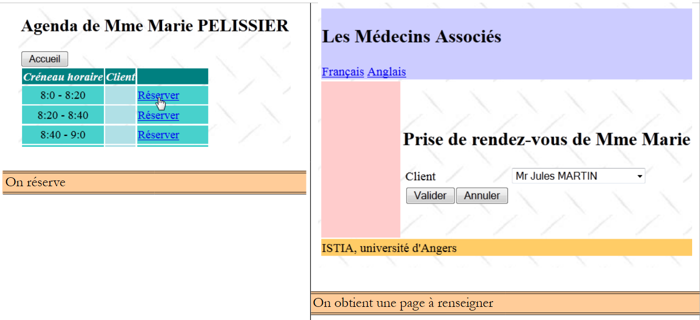 |
The template involved in this action is as follows:
// model
private Date jour = new Date();
private Boolean form1Rendered = true;
private Boolean form2Rendered = false;
private Boolean form3Rendered = false;
private Boolean erreurRendered = false;
private String form3Titre;
private AgendaMedecinJour agendaMedecinJour;
private Medecin medecin;
private CreneauMedecinJour creneauChoisi;
private List<Erreur> erreurs;
// action on RV
public void action() {
...
// we found
creneauChoisi = agendaMedecinJour.getCreneauxMedecinJour()[i];
// according to desired action
if (creneauChoisi.getRv() == null) {
reserver();
} else {
supprimer();
}
}
// reservation
public void reserver() {
try {
// title form 3
form3Titre = Messages.getMessage(null, "form3.titre", new Object[]{medecin.getTitre(), medecin.getPrenom(), medecin.getNom(), new SimpleDateFormat("dd MMM yyyy").format(jour),
creneauChoisi.getCreneau().getHdebut(), creneauChoisi.getCreneau().getMdebut(), creneauChoisi.getCreneau().getHfin(), creneauChoisi.getCreneau().getMfin()}).getSummary();
// customer selected in combo
idClient=null;
// form 3 is displayed
setForms(false, false, true, false);
} catch (Throwable th) {
// error view
prepareVueErreur(th);
}
}
- line 14: if the selected time slot has no appointment, then it is a reservation,
- line 30: we prepare the title of the [form3.xhtml] page using the same technique as for the title of the [form2.xhtml] page,
- line 34: in this form, there is a combo box whose value is populated by idClient. We set the value of this field to null so that no one is selected,
- line 36: we display the page [form3.xhtml],
- line 39: or the error page if an exception occurred.
The [form3.xhtml] page is as follows:
<?xml version='1.0' encoding='UTF-8' ?>
<!DOCTYPE html PUBLIC "-//W3C//DTD XHTML 1.0 Transitional//EN" "http://www.w3.org/TR/xhtml1/DTD/xhtml1-transitional.dtd">
<html xmlns="http://www.w3.org/1999/xhtml"
xmlns:h="http://java.sun.com/jsf/html"
xmlns:f="http://java.sun.com/jsf/core"
xmlns:ui="http://java.sun.com/jsf/facelets">
<body>
<h2><h:outputText value="#{form.form3Titre}"/></h2>
<h:panelGrid columns="2">
<h:outputText value="#{msg['form3.client']}"/>
<h:selectOneMenu value="#{form.idClient}">
<f:selectItems value="#{form.clients}" var="client" itemLabel="#{client.titre} #{client.prenom} #{client.nom}" itemValue="#{client.id}"/>
</h:selectOneMenu>
<h:panelGroup>
<h:commandButton value="#{msg['form3.valider']}" actionListener="#{form.validerRv}" />
<h:commandButton value="#{msg['form3.annuler']}" actionListener="#{form.annulerRv}"/>
</h:panelGroup>
</h:panelGrid>
</body>
</html>
This page is powered by the following model:
// bean Application
@Inject
private Application application;
// model
private Long idClient;
// clients list
public List<Client> getClients() {
return application.getClients();
}
- line 6: the client ID populates the value attribute of the clients combo box on line 12 of the page. It sets the selected combo box item,
- lines 9–11: the getClients method populates the combo box (line 13). The label (itemLabel) of each option is the customer’s [Titre Prénom Nom], and the associated value (itemValue) is the client's id. It is therefore this value that will be posted.
3.6.6.5. Confirming an appointment
Confirming an appointment follows this sequence:
 |
and corresponds to clicking the [Valider] button:
<h:commandButton value="#{msg['form3.valider']}" actionListener="#{form.validerRv}" />
The method [Form].validerRv will handle this event. Its code is as follows:
// bean Application
@Inject
private Application application;
// model
private Date jour = new Date();
private Boolean form1Rendered = true;
private Boolean form2Rendered = false;
private Boolean form3Rendered = false;
private Boolean erreurRendered = false;
private Long idCreneau;
private Long idClient;
private List<Erreur> erreurs;
// validation Rv
public void validerRv() {
try {
// retrieve an instance of the selected time slot
Creneau creneau = application.getMetier().getCreneauById(idCreneau);
// we add the Rv
application.getMetier().ajouterRv(jour, creneau, application.gethClients().get(idClient));
// we update the agenda
agendaMedecinJour = application.getMetier().getAgendaMedecinJour(medecin, jour);
// form2 is displayed
setForms(false, true, false, false);
} catch (Throwable th) {
// error view
prepareVueErreur(th);
}
}
- line 12: before the validerRv method executes, the idClient field receives the id from the client selected by the user,
- line 19: using the id for the time slot stored in a previous step (the bean is session-scoped), the [métier] layer is asked for a reference to the time slot itself,
- line 21: the [métier] layer is asked to add an appointment for the selected day (day), the selected time slot (slot), and the selected client (idClient),
- line 23: the [métier] layer is asked to refresh the doctor’s agenda. We will see the added appointment plus any changes that other users of the application may have made,
- line 25: we re-display the agenda [form2.xhtml],
- line 28: display the error page if an error occurs.
3.6.6.6. Canceling an appointment
This corresponds to the following sequence:
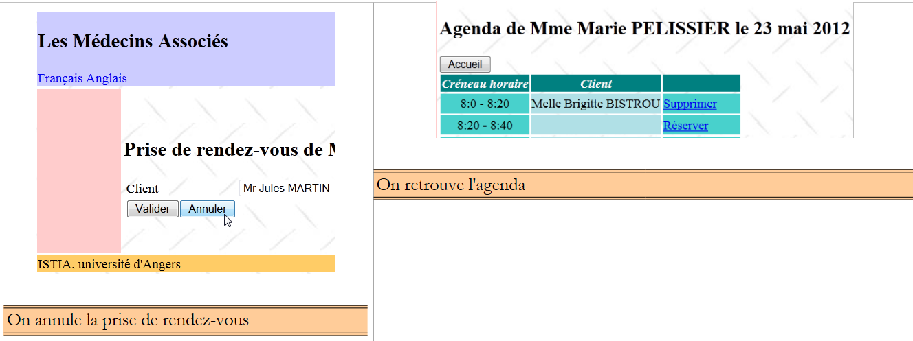 |
The [Annuler] button on the [form3.xhtml] page is as follows:
<h:commandButton value="#{msg['form3.annuler']}" actionListener="#{form.annulerRv}"/>
The method [Form].annulerRv is therefore called:
// cancel appointment
public void annulerRv() {
// form2 is displayed
setForms(false, true, false, false);
}
3.6.6.7. Back to the home page
There is one more action to review, that of the following sequence:
 |
The code for the [Accueil] button on the [form2.xhtml] page is as follows:
<h:commandButton value="#{msg['form2.accueil']}" action="#{form.accueil}" />
The [Form].accueil method is as follows:
public void accueil() {
// the home page is displayed
setForms(true, false, false, false);
}
3.7. Conclusion
We have built the following application:
 |
We focused on the application’s functionality rather than its user interface. The latter will be improved using the PrimeFaces component library. We have built a basic application that nevertheless represents a layered Java EE architecture using EJB. The application can be improved in various ways:
- authentication is required. Not everyone is authorized to add or delete appointments,
- we should be able to scroll the calendar forward and backward when searching for a day with available slots,
- it should be possible to request a list of days when there are available slots for a doctor. Indeed, if the doctor is an ophthalmologist, their appointments are generally booked six months in advance,
- ...
3.8. Tests with Eclipse
3.8.1. The [DAO] layer
 |
- In [1], import the EJB project from the [DAO] layer and its client,
- in [2], select the EJB project from the [DAO] layer and run it in [3],
- in [4], run it on a server,
 |
- in [5], only the Glassfish server is offered because it is the only one with a EJB container,
- in [6], the EJB module has been deployed,
 |
- in [7], the logs are displayed:
These are the ones we had with Netbeans.
 |
- In [7A] and [7B], we run the client test JUnit;
 |
- in [8], the test passes,
- in [9], the console logs.
 |
In [10], the EJB application is unloaded.
3.8.2. The [métier] layer
 |
- in [1], we import the four Maven projects from the [métier] layer,
- in [2], select the enterprise project and run it in [3], on a server Glassfish [4] [5],
 |
- in [6], the business project has been deployed on Glassfish,
 |
- In [7], we look at the logs for Glassfish,
On line 3, we note the portable name of EJB and paste it into the console client of this EJB:
public class ClientRdvMedecinsMetier {
// the remote interface name of the EJB [Metier]
private static String IDaoRemoteName = "java:global/mv-rdvmedecins-metier-dao-ear/mv-rdvmedecins-ejb-metier-1.0-SNAPSHOT/Metier!rdvmedecins.metier.service.IMetierRemote";
// today's date
private static Date jour = new Date();
 |
- In [8], we run the console client,
- in [9], its logs.
 |
- in [10], the enterprise application is unloaded;
3.8.3. The [web] layer
 |
- in [1], we import the three Maven projects from the [web] layer. The one suffixed with "ear" is the enterprise project that must be deployed to Glassfish,
- on [2], we run it,
 |
- on the Glassfish server [3],
- in [4], the enterprise application has been successfully deployed,
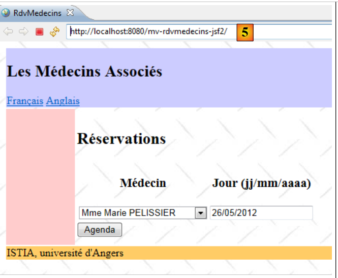 |
- in [5], we request the application's URL in the Eclipse internal browser.